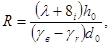
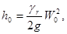
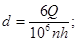
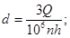
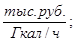
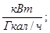
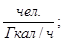
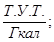

СТРОИТЕЛЬНЫЕ НОРМЫ И ПРАВИЛА
НОРМЫ ПРОЕКТИРОВАНИЯ
КОТЕЛЬНЫЕ УСТАНОВКИ
СНиП II-35-76
Глава СНиП II-35-76 «Котельные установки» разработана институтом Сантехпроект Госстроя СССР при участии институтов ВНИПИэнергопром Минэнерго СССР, ЦКТИ им. И.И. Ползунова Минэнергомаша, Теплопроект Минмонтажспецстроя СССР, Красноярский ПромстройНИИпроект Монтажстроя СССР и Гидротехмонтаж Минмонтажспецстроя СССР.
С введением в действие настоящей главы СНиП утрачивают силу глава СНиП II-Г.9-65 «Котельные установки. Нормы проектирования» и «Указания по проектированию котельных установок» (СН 350-66).
РЕДАКТОРЫ инженеры Ю.Б. Александрович, О.И. Косов (Госстрой СССР), И.И. Школьник, М.Д. Язвин (Сантехпроект).
УТВЕРЖДЕНЫ постановлением Государственного комитета Совета Министров по делам строительства от 31 декабря 1976 г. № 229.
Изменения, утвержденные постановлением Госстроя СССР от 8.09.77 г. № 140 и введенное с 1.01.78 г. и изменение № 1, утвержденное постановлением Госстроя России от 11.09.97 г. № 18-52 внесены в текст документа, измененные пункты отмечены *.
С вводом СНиП 2.04.14-88 утв. пост. Госстроя СССР от 9 августа 1988 г. № 155, утрачивают силу с 01.08.90 г. раздел 13 и приложения 6-8.
|
Государственный
комитет Совета Министров СССР по делам строительства |
Строительные нормы и правила |
СНиП II-35-76 |
|
Котельные установки |
Взамен |
1.1. Настоящие нормы и правила должны соблюдаться при проектировании новых и реконструируемых котельных установок (котельных) с паровыми, водогрейными и пароводогрейными котлами, независимо от производительности, с давлением пара не более 40 кгс/cм2 * и с температурой воды не более 200 °С.
___________
* Здесь и далее указывается абсолютное значение
Примечание: Настоящие нормы в правила не распространяются на проектирование котельных тепловых электростанций, передвижных котельных, котельных с электродными котлами, котлами-утилизаторами, котлами с высокотемпературными органическими, теплоносителями, (ВОТ) и другими специализированными типами котлов для технологических целей, котельных для по квартирных систем отопления.
1.2. При проектировании котельных с котлами, подведомственными Госгортехнадзору СССР (с давлением пара более 1,7 кгс/см2 и с температурой воды более 115 °С), кроме настоящих норм и правил необходимо соблюдать, в частности, правила безопасности, утвержденные Госгортехнадзором СССР.
1.3.* Проектирование новых и реконструируемых котельных должно осуществляться в соответствии с утвержденными схемами теплоснабжения, разработанными с учетом строительства автономных (индивидуальных) котельных.
При отсутствии утвержденной схемы теплоснабжения проектирование котельных допускается на основании соответствующих технико-экономических обоснований (ТЭО), согласованных в установленном порядке.
Вид топлива для котельных определяется по согласованию с топливосодержащими организациями в установленном порядке. При этом использование твердого или жидкого топлива для крышных котельных не допускается.
(Измененная редакция. Изм. № 1).
1.4. Котельные по назначению подразделяются на:
отопительные - для обеспечения теплом систем отопления, вентиляции и горячего водоснабжения;
отопительно-производственные - для обеспечения теплом систем отопления, вентиляции, горячего водоснабжения и для технологического теплоснабжения;
производственные - для технологического теплоснабжения.
1.5.* Котельные по размещению подразделяются на:
отдельно стоящие;
пристроенные к зданиям другого назначения;
встроенные в здания другого назначения независимо от этажа размещения;
крышные.
(Измененная редакция. Изм. № 1).
1.6.* Для производственных зданий промышленных предприятий допускается проектирование пристроенных, встроенных и крышных котельных. Для котельных, пристроенных к зданиям указанного назначения, общая тепловая мощность устанавливаемых котлов, единичная производительность каждого котла и параметры теплоносителя не нормируются. При этом котельные должны располагаться у стен здания, где расстояние от стены котельной до ближайшего проема должно быть не менее 2 м по горизонтали, а расстояние от перекрытия котельной до ближайшего проема по вертикали - не менее 8 м.
Для котельных, встроенных в производственные здания промышленных предприятий, при применении котлов с давлением пара до 0,07 МПа (1,7 кгс/см2) и температурой воды до 115 °С тепловая мощность котлов не нормируется.
Тепловая мощность котлов с давлением пара более 0,07 МПа (1,7 кгс/см2) и температурой еоды более 115 °С не должна превышать величин, установленных Правилами устройства и безопасной эксплуатации паровых и водогрейных котлов, утвержденными Госгортехнадзором России.
Крышные котельные для производственных зданий промышленных предприятий допускается проектировать с применением котлов с давлением пара до 0,07 МПа (1,7 кгс/см2) и температурой воды до 115 °С. При этом тепловая мощность такой котельной не должна превышать потребности в теплоте здания, для теплоснабжения которого она предназначена, но не более 5 МВт.
Не допускается размещать крышные и встроенные котельные над производственными помещениями и складами категорий А и Б по взрывопожарной и пожарной опасности.
(Измененная редакция. Изм. № 1).
1.7.* Размещение котельных, встроенных в многоквартирных жилых зданиях, не допускается.
Для жилых зданий допускается устройство пристроенных и крышных котельных. Указанные котельные допускается проектировать с применением водогрейных котлов с температурой воды до 115 °С.
Тепловая мощность котельной не должна превышать потребности в теплоте здания, для теплоснабжения которого она предназначена, а тепловая мощность крышной котельной не должна быть более 3,0 МВт.
Не допускается проектирование пристроенных котельных, непосредственно примыкающих к жилым зданиям со стороны входных подъездов, и участков стен с оконными проемами, где расстояние от внешней стены котельной до ближайшего окна жилого помещения менее 4 м по горизонтали, а расстояние от перекрытия котельной до ближайшего окна жилого помещения менее 8 м по вертикали.
Не допускается размещение крышных котельных непосредственно на перекрытия жилых помещений (перекрытие жилого помещения не может служить основанием пола котельной), а также смежно с жилыми помещениями.
(Измененная редакция. Изм. № 1).
1.8.* Для общественных, административных и бытовых зданий допускается проектирование встроенных, пристроенных и крышных котельных при применении:
- водогрейных котлов с температурой нагрева воды до 115 °С;
- паровых котлов с давлением насыщенного пара до 0,07 МПа (1,7 кгс/см2), удовлетворяющих условию
(t - 100) V £ 100 для каждого котла,
где t - температура насыщенного пара при рабочем давлении, °С;
V - водяной объем котла, м3.
При этом в котельных, расположенных в подвале, не допускается предусматривать котлы, предназначенные для работы на газообразном и жидком топливе с температурой вспышки паров ниже 45 °С.
Общая тепловая мощность индивидуальной котельной не должна превышать потребности в теплоте здания или сооружения, для теплоснабжения которого она предназначена, кроме того, тепловая мощность не должна превышать, МВт:
3,0 - для крышной и для встроенной котельной с котлами на жидком и газообразном топливе;
1,5 - для встроенной котельной с котлами на твердом топливе.
0бщая тепловая мощность пристроенных котельных не ограничивается.
Не допускается размещение пристроенных котельных со стороны главного фасада здания. Расстояние от стены здания котельной до ближайшего окна должно быть не менее 4 м по горизонтали, а от покрытия котельной до ближайшего окна не менее 8 м по вертикали. Такие котельные не допускается также размещать смежно, под и над помещениями с одновременным пребыванием в них более 50 чел.
Не допускается проектирование крышных, встроенных и пристроенных котельных к зданиям детских дошкольных и школьных учреждений, к лечебным и спальным корпусам больниц и поликлиник, к лечебным и спальным корпусам санаториев и учреждений отдыха.
(Измененная редакция. Изм. № 1).
|
Внесены |
Утверждены |
Срок введения |
1.9. Проектирование котельных, пристроенных к складам сгораемых материалов легковоспламеняющихся и горючих жидкостей, не допускается, за исключением складов топлива для котельных (п. 11.51 настоящих норм и правил).
1.10. Не допускается размещать встроенные котельные под помещениями общественного назначения (фойе и зрительными залами, торговыми помещениями магазинов, классами и аудиториями учебных заведений, залами столовых, ресторанов, раздевальными и мыльными бань, душевыми и т. п.) и под складами сгораемых материалов.
1.11. Потребители тепла по надежности теплоснабжения относятся:
к первой категории - потребители, нарушение теплоснабжения которых связано с опасностью для жизни людей или со значительным ущербом народному хозяйству (повреждение технологического оборудования, массовый брак продукции);
ко второй категории - остальные потребители тепла.
Перечни потребителей тепла первой категории утверждают союзные и союзно-республиканские министерства и ведомства по согласованию с Госпланом СССР и Госстроем СССР.
1.12. Котельные по надежности отпуска тепла потребителям относятся:
к первой категории - котельные, являющиеся единственным источником тепла системы теплоснабжения и обеспечивающие потребителей первой категории, не имеющих индивидуальных резервных источников тепла;
ко второй категории - остальные котельные.
1.13. Тепловые нагрузки для расчета и выбора оборудования котельных должны определяться для трех характерных режимов:
максимально-зимнего - при средней температуре наружного воздуха в наиболее холодную пятидневку;
наиболее холодного месяца - при средней температуре наружного воздуха в наиболее холодный месяц;
летнего - при расчетной температуре наружного воздуха теплого периода (расчетные параметры А).
Указанные средние и расчетные температуры наружного воздуха принимаются в соответствии со строительными нормами и правилами по строительной климатологии и геофизике и по проектированию отопления, вентиляции и кондиционирования воздуха.
1.14. Для теплоснабжения зданий и сооружений, имеющих дежурное отопление или в работе систем отоплении которых допускаются перерывы, следует предусматривать возможность работы оборудования котельной при этих условиях.
1.15. Расчетная производительность котельной определяется суммой часовых расходов тепла на отопление и вентиляцию при максимально-зимнем режиме, расчетных расходов тепла на горячее водоснабжение, определяемых в соответствии со строительными нормами и правилами по проектированию горячего водоснабжения, и расчетных расходов тепла на технологические цели. При определении расчетной производительности котельной должны учитываться также расходы тепла на собственные нужды котельной и потери тепла в котельной и в тепловых сетях.
Примечание. Pacчетные расходы тепла на технологические цели должны приниматься с yчетом возможности несовпадения максимальных расходов тепла отдельными потребителями.
1.16. Количество и единичную производительность котлоагрегатов, устанавливаемых в котельной, следует выбирать по расчетной производительности котельной, проверяя режим работы котлоагрегатов для теплого периода года; при этом в случае выхода из строя наибольшего по производительности котла в котельных первой категории оставшиеся должны обеспечивать отпуск тепла потребителям первой категории:
на технологическое теплоснабжение и системы вентиляции - в количестве, определяемом минимально допустимыми нагрузками (независимо от температуры наружного воздуха);
на отопление и горячее водоснабжение - в количестве, определяемом режимом наиболее холодного месяца.
В случае выхода из строя одного котла независимо от категории котельной количество тепла, отпускаемого потребителям второй категории не нормируется.
Максимальное количество котлов, устанавливаемых в котельной, определяется на основании технико-экономических расчетов.
В котельных должна предусматриваться установка не менее двух котлов, за исключением производственных котельных второй категории, в которых допускается установка одного котла.
1.17. В проектах котельных следует принимать заводские и типовые компоновки котлоагрегатов и вспомогательного оборудования.
1.18.* В проектах котельных следует предусматривать:
котлы, экономайзеры, воздухоподогреватели, золоуловители и другое оборудование в блочном транспортабельном исполнении повышенной заводской готовности;
укрупненные монтажные блоки трубопроводов и газовоздухопроводов;
укрупнение групп технологически связанного между собой вспомогательного оборудования путем компоновки его в транспортабельные монтажные блоки с трубопроводами и арматурой.
Для встроенных, пристроенных и крышных котельных следует предусматривать автоматизированные котлы полной заводской готовности.
(Измененная редакция. Изм. № 1).
1.19.* Вне зданий котельных, на открытых площадках, допускается размещение тягодутьевых машин, золоуловителей, деаэраторов, декарбонизаторов, осветлителей, баков различного назначения, подогревателей мазута; при этом следует предусматривать мероприятия по обеспечению надежной и безопасной эксплуатации, защиту от замерзания трубопроводов и арматуры, а также мероприятия по охране окружающей среды от загрязнения и защите от шума.
Возможность установки крышной котельной на зданиях любого назначения выше отметки 26,5 м должна согласовываться с территориальными органами Государственной противопожарной службы МВД России.
(Измененная редакция. Изм. № 1).
1.20.* Технологическая схема и компоновка оборудования котельной должны обеспечивать:
оптимальную механизацию и автоматизацию технологических процессов, безопасное и удобное обслуживание оборудования;
установку оборудования по очередям;
наименьшую протяженность коммуникаций;
оптимальные условия для механизации ремонтных работ;
возможность въезда в котельную напольного транспорта (автопогрузчиков, электрокаров) для транспортирования узлов оборудования и трубопроводов при производстве ремонтных работ.
Автоматизация технологических процессов индивидуальных котельных должна обеспечить безопасную эксплуатацию без постоянного обслуживающего персонала.
Для ремонта узлов оборудования, арматуры и трубопроводов массой более 50 кг следует предусматривать, как правило, инвентарные грузоподъемные устройства (электрокары, автокраны).
При невозможности обслуживания оборудования с применением инвентарных устройств для этих целей допускается предусматривать стационарные грузоподъемные механизмы (тали, тельферы, подвесные и мостовые краны). Стационарные грузоподъемные устройства, необходимые при выполнении только монтажных работ, проектом не предусматриваются.
Для обеспечения ремонта оборудования, устанавливаемого на открытых площадках, следует предусматривать, как правило, наземные безрельсовые краны.
(Измененная редакция. Изм. № 1).
1.21.* В котельных необходимо предусматривать ремонтные участки или помещения для проведения текущего ремонта оборудования, арматуры, приборов контроля и регулирования. При этом следует учитывать возможность выполнения работ по текущему ремонту указанного оборудования промышленными предприятиями или районными специализированными организациями.
В автономных котельных ремонтные участки не предусматриваются. Ремонт оборудования, арматуры, приборов контроля и регулирования должен производиться специализированными организациями, имеющими соответствующие лицензии, с использованием их инвентарных устройств и баз.
(Измененная редакция. Изм. № 1).
1.22.* Размещение котлов и вспомогательного оборудования в котельных (расстояние между котлами и строительными конструкциями, ширина проходов), а также устройство площадок и лестниц для обслуживания оборудования в зависимости от параметров теплоносителя следует предусматривать в соответствии с Правилами устройства и безопасной эксплуатации паровых и водогрейных котлов, утвержденными Госгортехнадзором России, Правилами устройства и безопасной эксплуатации паровых котлов с давлением пара не более 0,07 МПа (1,7 кгс/см2), водогрейных котлов и водоподогревателей с температурой подогрева воды не выше 338К (115 °С), утвержденных Минстроем России, а также в соответствии с паспортами и инструкциями по эксплуатации котлов.
Для автономных автоматизированных котельных, работающих без постоянного обслуживающего персонала, размеры проходов принимаются в соответствии с паспортами и инструкциями по эксплуатации для обеспечения свободного доступа при техническом обслуживании, монтаже и демонтаже оборудования.
(Измененная редакция. Изм. № 1).
1.23. * Категории производств по взрывной, взрывопожарной и пожарной опасности, степень огнестойкости зданий (помещений) и сооружений котельных следует принимать согласно прил. 1 к настоящим нормам и правилам, а также в соответствии с нормами Государственной противопожарной службы МВД России НПБ 105-95.
(Измененная редакция. Изм. № 1).
1а.* ТЕРМИНЫ И ОПРЕДЕЛЕНИЯ
Котельная - комплекс зданий и сооружений, здание или помещения с котлом (теплогенератором) и вспомогательным технологическим оборудованием, предназначенными для выработки теплоты в целях теплоснабжения.
Центральная котельная - котельная, предназначенная для теплоснабжения нескольких зданий и сооружений, связанных с ней наружными тепловыми сетями.
Автономная (индивидуальная) котельная - котельная, предназначенная для теплоснабжения одного здания или сооружения.
Крышная котельная - котельная, располагаемая (размещаемая) на покрытии здания непосредственно или на специально устроенном основании над покрытием.
Раздел 1а (Введен дополнительно. Изм. № 1).
2.1. Земельные участки для строительства котельных выбираются в соответствии со схемой теплоснабжения, проектами планировки и застройки городов, поселков и сельских населенных пунктов, генеральными планами предприятий, схемами генеральных планов групп предприятий с общими объектами (промышленных узлов).
Порядок согласования размещения котельных, отдельных зданий и сооружений и других объектов, которые могут угрожать безопасности полетов воздушных судов или создавать помехи для нормальной работы радиотехнических средств аэродромов, а также размеры земельных участков котельных следует принимать в соответствии со СНиП II-60-75.
(Измененная редакция. Изм. от 01.07.1985 г.).
2.2. При проектировании генерального плана котельной следует предусматривать возможность размещения укрупнительно-сборочных площадок, складских, а также временных сооружений, необходимых на период производства строительно-монтажных работ.
2.3. Склады топлива, реагентов, материалов, помещения лабораторий, а также вспомогательные помещения котельных, размещаемых на площадках промышленных предприятий, следует объединять с аналогичными зданиями, помещениями и сооружениями этих предприятий.
2.4.* На площадке котельной следует располагать главный корпус, сооружения топливного хозяйства и золошлакоудаления, трансформаторную подстанцию, газорегуляторный пункт (ГРП), станцию сбора и перекачки конденсата, баки-аккумуляторы горячего водоснабжения, здания водоподготовки и реагентного хозяйства.
Указанные здания и сооружения допускается объединять, соблюдая требования разд. 11 настоящих норм и правил.
Для встроенных и пристроенных индивидуальных котельных следует предусматривать закрытые склады хранения твердого и жидкого топлива, расположенные вне помещения котельной, и здания, для теплоснабжения которого она предназначена, в соответствии со СНиП 2.07.01-89*.
Вместимость складов жидкого топлива не должна превышать величин, установленных строительными нормами и правилами по проектированию складов нефти и нефтепродуктов для складов второй группы.
Ограждение котельных следует проектировать в соответствии с Указаниями по проектированию ограждений площадок и участков предприятий, зданий и сооружений.
Здания и ограждения котельных, располагаемых на площадках промышленных предприятий, ограждать не допускается.
(Измененная редакция. Изм. № 1).
2.5. Вне пределов площадки котельной допускается располагать разгрузочные устройства топливоподачи, топливные склады, мазутные хозяйства, станции сбора и перекачки конденсата, баки-аккумуляторы горячего водоснабжения, насосные станции и резервуары противопожарного и питьевого водоснабжения, золошлакоотвалы; при этом мазутное хозяйство, баки-аккумуляторы горячего водоснабжения, резервуары противопожарного и питьевого водоснабжения должны иметь ограждения.
2.6. Систему водоотвода с территории котельной следует проектировать открытой, а в условиях застройки - в увязке с сетями производственной и дождевой канализация предприятия или района, в котором размещается котельная.
2.7. Расстояния до жилых и общественных зданий следует принимать:
от зданий, сооружений котельной, а также от установленного на открытых площадках оборудования - по санитарным нормам допускаемого уровня шума в жилой застройке;
от складов твердого и жидкого топлива, кислоты, щелочи и других сильнодействующих ядовитых веществ - по специальным нормам.
2.8. Зола и шлак должны использоваться для нужд строительства и строительной индустрии. При невозможности их использования, золошлакоотвалы следует проектировать, соблюдая следующие условия:
размеры площадки золошлакоотвалов должны предусматриваться с учетом работы котельной не менее 25 лет с выделением первой очереди строительства, рассчитанной на эксплуатацию котельной в течение 10 лет:
золошлакоотвалы следует размещать на непригодных для сельского хозяйства земельных участках, вблизи площадки котельной: при этом для золошлакоотвалов следует использовать низины, овраги, заболоченные места, выработанные карьеры, подлежащие
благоустройству, с учетом перспективного развития района строительства.
При проектировании следует предусматривать защиту водоемов от выноса золы и шлака дождевыми или паводковыми водами.
2.9. Транспортная схема котельной принимается исходя из ее расчетной производительности, с учетом очередности строительства и перспективы расширения.
2.10. Режим подачи подвижного состава под разгрузку основного или резервного топлива и реагентов (весовая норма подач, количество и размер ставок, продолжительность разгрузки, грузоподъемность вагонов и цистерн) устанавливается по согласованию с органами Министерства путей сообщения. При установлении весовой нормы подачи должна учитываться емкость оклада, рассчитанная в соответствии с разделом 11 настоящих норм и правил.
2.11. Подача груженых вагонов и откатка порожняка должны осуществляться средствами Министерства путей сообщения или промышленного предприятия, на территории которого размещается котельная.
2.12. Для котельных производительностью более 50 Гкал/ч при доставке топлива или вывозе золы и шлака автомобильным транспортом основной автомобильный въезд, связывающий площадку котельной с внешней сетью автомобильных дорог, должен иметь две полосы движения.
Для котельных производительностью 50 Гкал/ч и менее независимо от способа доставки топлива и вывоза золы и шлака следует предусматривать устройство подъездной автомобильной дороги с одной полосой движения.
2.13. Проектами должна предусматриваться возможность подъезда автомобильного транспорта к зданиям и сооружениям котельных и к оборудованию, устанавливаемому на открытых площадках.
Дороги для автомобильного транспорта обеспечивающего ведение технологического процесса, должны иметь усовершенствованные капитальные покрытия.
3.1.* При проектировании зданий и сооружений котельных следует руководствоваться строительными нормами и правилами по проектированию производственных зданий, административных и бытовых зданий, сооружений промышленных предприятий и указаниями настоящего раздела.
При проектировании встроенных, пристроенных и крышных котельных следует дополнительно руководствоваться требованиями строительных норм и правил тех зданий и сооружений, для теплоснабжения которых они предназначены.
(Измененная редакция. Изм. № 1).
3.2. При проектировании котельных следует обеспечивать единое архитектурное и композиционное решение всех зданий и сооружений, простоту и выразительность фасадов и интерьеров, а также предусматривать применение экономичных конструкций и отделочных материалов.
3.3. Размеры пролетов зданий и сооружений котельных следует принимать кратными 6 м.
При специальном обосновании допускается применение пролетов размерами, кратными 3 м.
Размеры пролетов этажерок допускается принимать кратными 1,5 м.
3.4. Шаг колонн следует принимать 6 м. При специальном обосновании шаг колонн допускается принимать 12 м.
3.5. Высоту встроенных антресолей или площадок под оборудование следует принимать по технологическим требованиям и назначать их кратными 0,3 м.
3.6. Здания котельных необходимо проектировать с пролетами одного направления.
Компоновочные решения с пролетами разных направлений допускаются в условиях стесненной площадки строительства при проектировании реконструкция котельных.
3.7. Объемно-планировочные и конструктивные решения зданий и сооружений котельных должны допускать возможность их расширения.
3.8. Для обеспечения возможности крупноблочного монтажа оборудования в стенах и перекрытиях зданий котельных должны предусматриваться монтажные проемы.
Такие проемы, как правило, следует предусматривать в торцевой стене со стороны расширения котельной.
3.9.* Встроенные котельные должны отделяться от смежных помещений противопожарными стенами 2-го типа или противопожарными перегородками 1-го типа и противожарными перекрытиями 3-го типа. Пристроенные котельные должны отделяться от основного здания противопожарной стеной 2-го типа. При этом стена здания, к которой пристраивается котельная, должна иметь предел огнестойкости не менее 0,75 ч, а перекрытие котельной должно выполняться из негорючих материалов.
Несущие и ограждающие конструкции крышных котельных должны иметь предел огнестойкости 0,75 ч, предел распространения пламени по конструкции равным нулю, а кровельное покрытие основного здания под котельной и на расстоянии 2 м от ее стен должно выполняться из негорючих материалов или защищаться от возгорания бетонной стяжкой толщиной не менее 20 мм.
Сопротивление воздухопроницанию и паропроницанию стен и перекрытий, отделяющих встроенные и пристроенные котельные от других помещений, а также покрытия зданий при размещении котельных на крышах должны соответствовать требованиям СНиП II-3-79* «Строительная теплотехника».
Внутренние поверхности стен встроенных и крышных котельных должны быть окрашены влагостойкими красками.
(Измененная редакция. Изм. № 1).
3.10.* Выходы из встроенных и пристроенных котельных надлежит предусматривать непосредственно наружу.
Марши лестниц для встроенных котельных допускается располагать в габаритах общих лестничных клеток, отделяя эти марши от остальной части лестничной клетки несгораемыми перегородками и перекрытиями с пределом огнестойкости не менее 0,75 ч.
Для крышных котельных следует предусматривать:
выход из котельной непосредственно на кровлю;
выход на кровлю из основного здания по маршевой лестнице;
при уклоне кровли более 10 % следует предусматривать ходовые мостики шириной 1 м, с перилами от выхода на кровлю до котельной и по периметру котельной.
Конструкции мостиков и перил следует предусматривать из негорючих материалов.
(Измененная редакция. Изм. № 1).
3.11. Надбункерные галереи для размещения транспортных механизмов топливоподачи должны быть отделены от котельных залов несгораемыми перегородками (без проемов) с пределом огнестойкости не менее 0,25 ч.
3.12. Внутренние поверхности ограждающих конструкций помещений топливоподачи и пылеприготовления должны быть гладкими и окрашенными влагостойкими красками в светлые тона.
Имеющиеся выступы должны выполняться с откосами под углом 60 ° к горизонту и окрашиваться влагостойкими красками.
Металлические лестницы и площадки в помещениях топливоподачи следует проектировать сквозными.
3.13. В зданиях и помещениях котельных с явными избыточными тепловыделениями величина сопротивления теплопередачи наружных ограждающих конструкций не нормируется, за исключением ограждающих конструкций зоны с постоянным пребыванием работающих (на высоту 2,4 м от уровня рабочей площадки).
Оконные переплеты выше указанного уровня следует проектировать с одинарным остеклением.
3.14. Площадь и размещение оконных проемов в наружных стенах следует определять из условия естественной освещенности, а также с учетом требований аэрации по обеспечению необходимой площади открывающихся проемов. Площадь оконных проемов должна быть минимальной.
Коэффициент естественной освещенности при боковом освещении в зданиях и сооружениях котельных надлежит принимать равным 0,5, кроме помещений лабораторий, щитов автоматики и ремонтных мастерских, для которых этот коэффициент принимается равным 1,5.
Коэффициент естественной освещенности помещений отдельно стоящих водоподготовительных установок следует принимать в соответствии со строительными кормами и правилами по проектированию наружных сетей и сооружений водоснабжения.
3.15.* Допускаемые уровни звукового давления и уровни звука на постоянных рабочих местах и у щитов контроля и управления следует принимать в соответствии с Санитарными нормами проектирования промышленных предприятий.
Автономные котельные должны обеспечивать уровень звукового давления в соответствии с требованиями СНиП II-12-77 тех зданий и сооружений, для теплоснабжения которых они предназначены.
(Измененная редакция. Изм. № 1).
3.16.* Наружные ограждающие конструкции наземной части топливоподачи для топлива с выходом летучих веществ на горючую массу 20 % и более (разгрузочных устройств, дробильных отделений, транспортерных галерей, узлов пересыпки, надбункерных галерей) следует проектировать исходя из того, что площадь легкосбрасываемых конструкций должна быть не менее 0,03 м2 на 1 м3 объема помещения.
Оконные переплеты в зданиях и помещениях топливоподачи должны предусматриваться одинарными и располагаться, как правило, в одной плоскости с внутренней поверхностью стен.
В индивидуальных котельных, работающих на жидком и газообразном топливе, следует предусматривать легкосбрасываемые ограждающие конструкции из расчета 0,03 м2 на 1 м3 объема помещения, в котором находятся котлы.
(Измененная редакция. Изм. № 1).
3.17. Перечень профессий работников котельных по группам производственных процессов и состав специальных бытовых помещений и устройств следует принимать согласно прил. 2 к настоящим нормам и правилам.
3.18. При количестве работающих в наиболее многочисленной смене 30 человек и более состав бытовых помещений, помещений общественного питания и культурного обслуживания принимается в соответствии со строительными нормами и правилами по проектированию вспомогательных зданий и помещений промышленных предприятий.
3.19. При количестве работающих в котельной в наиболее многочисленной смене от 12 до 30 человек должны предусматриваться следующие вспомогательные помещения: комната начальника котельной, гардеробные с умывальниками, уборные, душевые, комната приема пищи и кладовая уборочного инвентаря.
При количестве работающих в котельной в наиболее многочисленной смене до 12 человек из перечисленных вспомогательных помещений не предусматривается комната начальника котельной, а при числе работающих в котельной не более 5 человек в смену также не предусматривается умывальник в помещении гардеробной (допускается пользование умывальником при уборной).
3.20. В отдельно стоящих зданиях насосных станций, жидкого топлива с постоянным обслуживающим персоналом следует предусматривать гардеробную, уборную, душевую комнату обогрева. В отдельно стоящих зданиях водоподготовки следует предусматривать гардеробную, уборную, душевую.
3.21. Площади помещений, указанных в п.п. 3.19 и 3.20 настоящих норм и правил, устанавливаются в соответствии со строительными нормами и правилами по проектированию вспомогательных зданий и помещений промышленных предприятий.
3.22. При проектировании зданий и сооружении котельных следует руководствоваться приведенной в каталогах номенклатурой унифицированных сборных железобетонных и металлических конструкций, соблюдая требования общеплощадочной унификации конструкций, изделий и материалов.
3.23. Выбор несущих в ограждающих конструкций зданий и вооружений котельных следует производить в соответствии с Техническими правилами по экономному расходованию основных строительных материалов.
3.24. Несущие конструкции зданий и сооружений, как правило, следует проектировать исходя из условия выполнения работ всего нулевого цикла до начала монтажа каркаса и оборудования.
3.25. При проектировании следует применять крупноразмерные стеновые панели с полной фактурной отделкой и зашитой от коррозии выполненной я заводских условиях.
При отсутствии офактуренных панелей допускается предусматривать окраску фасадом зданий котельных силикатными, перхлорвиниловыми и другими стойкими красками.
3.26. Конструкция торцевой стены, возводимой со стороны предполагаемого расширения здания котельной, должна допускать возможность такого расширения.
3.27. Перекрытия каналов, прокладываемых в помещениях котельных, следует предусматривать из сборного железобетона в уровне чистого пола.
Перекрытия участков каналов, где по условиям эксплуатации необходим съем плит, допускается принимать из рифленой стали. Масса съемного щита или плиты не должна превышать 50 кг.
3.28. Конструкции каналов, полов и фундаментов под оборудование должны быть рассчитаны на нагрузки от перемещения оборудования от монтажных проемов до места его установки и должны обеспечивать возможность проезда грузоподъемных механизмов.
3.29.* Технологическое оборудование со статическими и динамическими нагрузками, не вызывающими в подстилающем бетонном слое пола напряжений, которые превышают напряжение от воздействия монтажных и транспортных нагрузок, следует устанавливать без фундаментов.
Для встроенных и крышных котельных должно предусматриваться технологическое оборудование, статические и динамические нагрузки которого позволяют устанавливать его без фундаментов. При этом статические и динамические нагрузки от оборудования крышной котельной на перекрытие здания не должны превышать несущей способности используемых строительных конструкций здания.
(Измененная редакция. Изм. № 1).
3.30. Транспортерные галереи, как правило, в местах их примыкания к зданиям котельных не должны опираться на каркас и ограждающие конструкции здания. Такое опирание допускается при соответствующем обосновании.
4.1.* Виды топлива основного, резервного и аварийного, а также необходимость резервного или аварийного вида топлива для котельных устанавливаются с учетом категории котельной, исходя из местных условий эксплуатации и по согласованию с топливоснабжающими организациями.
4.2.* Вид топлива для растопки и «подсвечивания» котлов с камерными топками для сжигания твердого топлива следует предусматривать исходя из требований завода-изготовителя.
Раздел 4 (Измененная редакция. Изм. № 1).
5.1. Для котлов применяются:
камерные топки для сжигания газообразного и жидкого топлива; камерные топки для сжигания твердого топлива в пылевидном состоянии;
слоевые топки для сжигания твердого топлива;
топки специальной конструкции для сжигания дров и древесных отходов.
5.2. Топочные устройства принимаются в соответствии с заводской компоновкой котлов. Изменения компоновки котлов и топочных устройств должны быть согласованы с заводами - изготовителями котлов.
5.3. Значения расчетных характеристик топочных устройств принимаются по данным нормативного метода теплового расчета котельных агрегатов, разработанного Центральным котлотурбинным институтом (ЦКТИ) им. И. И. Ползунова Всесоюзным теплотехническим институтом (ВТИ) им. Ф. Э. Дзержинского, за исключением значений расчетных характеристик слоевых топок с ручным обслуживанием, которые должны приниматься по методике Научно-исследовательского института санитарной техники.
6.1. Для котельных в качестве генераторов тепла следует применять паровые, водогрейные и пароводогрейные котлы, изготавливаемые промышленностью.
Производительность, КПД, аэродинамическое сопротивление и другие параметры работы котлов принимаются по данным заводов-изготовителей.
Установка водогрейных котлов производительностью более 10 Гкал/ч допускается только при условии, если котельная обеспечена двумя независимыми источниками питания электроэнергией.
6.2. Проект реконструкции котлоагрегата допускается выполнять по согласованию с заводом-изготовителем или конструкторской организацией, разработавшей проект котлоагрегата. При этом тепловые, аэродинамические к другие расчеты производятся в соответствии с отраслевыми нормативными документами по котлостроению, утвержденными Минэнергомашем и Минстройматериалов СССР.
6.3. При проектировании котельных следует исходить из условий комплектной поставки котлоагрегатов, включая топочные устройства, «хвостовые» поверхности нагрева, тягодутьевые установки, золоуловители, контрольно-измерительные приборы, средства регулирования и управления.
6.4.* В качестве «хвостовых» поверхностей следует применять воздухоподогреватели, поверхностные и контактные экономайзеры, а также теплоутилизаторы, использующие скрытую теплоту парообразования дымовых газов.
Поверхностные экономайзеры, воздухоподогреватели и теплоутилизаторы скрытой теплоты парообразования принимаются в заводской комплектации котлоагрегатов.
Контактные водяные экономайзеры могут применяться для подогрева воды систем бытового и технологического горячего водоснабжения, бань и прачечных. Использование тепла, полученного в контактных экономайзерах, для бытового горячего водоснабжения допускается при наличии промежуточных теплообменников.
Нагрев воды для бань и прачечных может производиться в контактных экономайзерах, применение которых разрешено Минздравом России.
Контактные экономайзеры могут устанавливаться непосредственно за котлами или после поверхностных экономайзеров.
(Измененная редакция. Изм. № 1).
6.5. «Хвостовые» поверхности нагрева следует проектировать индивидуально к каждому котлоагрегату. Проектирование групповых экономайзеров допускается, в виде исключения, для реконструкции котельной.
6.6. Экономайзеры применяются для нагрева питательной воды паровых котлов и воды систем теплоснабжения. Допускается переключение экономайзеров с нагрева воды для закрытых систем теплоснабжения на нагрев питательной воды котлов.
Не допускается предусматривать переключение экономайзеров с нагрева питательной воды паровых котлов на нагрев воды для открытых систем теплоснабжения или систем горячего водоснабжения.
6.7. Чугунные экономайзеры применяются для нагрева питательной воды паровых котлов и воды для систем теплоснабжения с рабочим давлением до 24 кгс/см2.
6.8. Стальные экономайзеры допускается применять для нагрева питательной воды паровых котлов, работающих на газообразном топливе, при условии, если температура воды на входе в экономайзер не ниже 65 °С, н на сернистом жидком топливе, если температура воды на входе в экономайзер не ниже 135 °С.
6.9. Индивидуальные экономайзеры следует проектировать не отключаемыми; при этом на входе воды в экономайзеры должны предусматриваться автоматические регуляторы, обеспечивающие непрерывное питание котлов.
6.10. В экономайзерах для подогрева питательной и сетевой воды должно предусматриваться направление потока воды снизу вверх. При двухколонковых экономайзерах питательной воды холодную воду следует подводить во вторую по ходу газов колонку. Движение питательной воды должно осуществляться снизу вверх в обеих колонках экономайзера.
6.11. Воздухоподогреватели применяются в случаях, когда подогрев воздуха необходим для интенсификации и устойчивости процесса горения или повышения экономичности работы топки; при этом температура воздуха на входе в воздухоподогреватель должна быть на 5-10 °С выше температуры точки росы дымовых газов.
7.1. При проектировании котельных тягодутьевые установки (дымососы и дутьевые вентиляторы) следует принимать в соответствии с техническими условиями заводов-изготовителей. Как правило, тягодутьевые установки должны предусматриваться индивидуальными к каждому котлоагрегату.
7.2. Групповые (для отдельных групп котлов) или общие (для всей котельной) тягодутьевые установки допускается применять при проектировании новых котельных с котлами производительностью до 1 Гкал/ч и при проектировании реконструируемых котельных.
7.3. Групповые или общие тягодутьевые установки следует проектировать с двумя дымососами и двумя дутьевыми вентиляторами. Расчетная производительность котлов, для которых предусматриваются эти установки, обеспечивается параллельной работой двух дымососов и двух дутьевых вентиляторов.
7.4. Выбор тягодутьевых установок следует производить с учетом коэффициентов запаса по давлению и производительности согласно прил. 3 к настоящим нормам и правилам.
7.5. При проектировании тягодутьевых установок для регулирования их производительности следует предусматривать направляющие аппараты, индукционные муфты и другие устройства, обеспечивающие экономичные способы регулирования и поставляемые комплектно с оборудованием.
7.6.* Проектирование газовоздушного тракта котельной выполняется в соответствии с нормативным методом аэродинамического расчета котельных установок ЦКТИ им. И.И. Ползунова.
Для встроенных, пристроенных и крышных котельных в стенах следует предусматривать проемы для подачи воздуха на горение, расположенные, как правило, в верхней зоне помещения.
Размеры живого сечения проемов определяются исходя из обеспечения скорости воздуха в них не более 1,0 м/с.
(Измененная редакция. Изм. № 1).
7.7. Газовое сопротивление серийно выпускаемых котлов следует принимать по данным заводов-изготовителей.
7.8. В зависимости от гидрогеологических условий и компоновочных решений котлоагрегатов наружные газоходы должны предусматриваться подземными или надземными. Газоходы следует предусматривать кирпичными или железобетонными. Применение надземных металлических газоходов допускается в виде исключения, при наличии соответствующего технико-экономического обоснования.
7.9. Газовоздухопроводы внутри котельной допускается проектировать стальными, круглого сечения. Газовоздухопроводы прямоугольного сечения допускается предусматривать в местах примыкания к прямоугольный элементам оборудования.
7.10. Для участков газоходов, где возможно скопление золы, должны предусматриваться устройства для очистки.
7.11. Для котельных, работающих на сернистом топливе,
при возможности образования в газоходах конденсата следует предусматривать защиту от коррозии внутренних поверхностей газоходов в соответствии со строительными нормами и правилами по защите строительных конструкций от коррозии.
7.12. Дымовые трубы котельных должны сооружаться по типовым проектам. При разработке индивидуальных проектов дымовых труб необходимо руководствоваться техническими решениями, принятыми в типовых проектах.
7.13. Для котельной необходимо предусматривать сооружение одной дымовой трубы. Допускается предусматривать две трубы и более при соответствующем обосновании.
7.14.* Высота дымовых труб при искусственной тяге определяется в соответствии с Указаниями по расчету рассеивания в атмосфере вредных веществ, содержащихся в выбросах предприятий, и Санитарными нормами проектирования промышленных предприятий.
Высота дымовых труб при естественной тяге определяется на основании результатов аэродинамического расчета газовоздушного тракта и проверяется по условиям рассеивания в атмосфере вредных веществ.
При расчете рассеивания в атмосфере вредных веществ следует принимать максимально допустимые концентрации золы, оксидов серы, оксидов азота, оксидов углерода. При этом количество выделяемых вредных выбросов принимается, как правило, по данным заводов-изготовителей котлов, при отсутствии этих данных определяется расчетным путем.
Высота устья дымовых труб для встроенных, пристроенных и крышных котельных должна быть выше границы ветрового подпора, но не менее 0,5 м выше крыши, а также не менее 2 м над кровлей более высокой части здания или самого высокого здания в радиусе 10 м.
(Измененная редакция. Изм. № 1).
7.15.* Диаметры выходных отверстий стальных дымовых труб определяются из условия оптимальных скоростей газов на основании технико-экономических расчетов.
Диаметры выходных отверстий кирпичных и железобетонных труб определяются на основании требований п. 7.16 настоящих норм и правил.
(Измененная редакция. Изм. № 1).
7.16. В целях предупреждения проникновения дымовых газов в толщу конструкций кирпичных и железобетонных труб не допускается положительное статическое давление на стенки газоотводящего ствола. Для этого должно выполняться условие R<1, где R - определяющий критерий, равный

где l - коэффициент сопротивления трению;
- постоянный уклон внутренней поверхности верхнего участка трубы;
- плотность наружного воздуха при расчетном режиме, кг/м3;
d0 - диаметр выходного отверстия трубы, м;
0 - динамическое давление газа в выходном отверстии трубы, кгс/м2;

здесь 0 - скорость газов в выходном отверстии трубы, м/c;
g - ускорение силы тяжести, м/с2;
- плотность газа при расчетном режиме, кг/м3;
Проверочный расчет должен производиться для зимнего и летнего расчетных режимов работы котельных.
При >1 следует увеличить диаметр трубы или применить трубу специальной конструкции (с внутренним газонепроницаемым
газоотводящим стволом, с противодавлением между стволом и футеровкой).
7.17. Образование конденсата в стволах кирпичных и железобетонных труб, отводящих продукты сжигания газообразного топлива, при всех режимах работы ее допускается.
7.18.* Для котельных, работающих на газообразном топливе, допускается применение стальных дымовых труб при экономической нецелесообразности повышения температуры дымовых газов.
Для автономных котельных дымовые трубы должны быть газоплотными, изготавливаться из металла или из негорючих материалов.
Трубы должны иметь, как правило, наружную тепловую изоляцию для предотвращения образования конденсата и люки для осмотра и чистки.
(Измененная редакция. Изм. № 1).
7.19. Проемы для газоходов в одном горизонтальном сечении ствола трубы или стакана фундамента должны располагаться равномерно по окружности.
Суммарная площадь ослабления в одном горизонтальном сечении не должна превышать 40 % общей площади сечения для железобетонного ствола или стакана фундамента и 30 % - для ствола кирпичной трубы.
7.20. Подводящие газоходы в месте примыкания к дымовой трубе необходимо проектировать прямоугольной формы.
7.21. В сопряжении газоходов с дымовой трубой необходимо предусматривать температурно-осадочные швы или компенсаторы.
7.22. Необходимость применения футеровки и тепловой изоляции для уменьшения термических напряжений в стволах кирпичных и железобетонных труб определяется теплотехническим расчетом.
7.23. В трубах, предназначенных для удаления дымовых газов от сжигания сернистого топлива, при образовании конденсата (независимо от процента содержания серы) следует предусматривать футеровку из кислотоупорных материалов по всей высоте ствола. При отсутствии конденсата на внутренней поверхности газоотводящего ствола трубы при всех режимах эксплуатации допускается применение футеровки из глиняного кирпича для дымовых труб или глиняного обыкновенного кирпича пластического прессования марки не ниже 100 с водопоглощением не более 15 % на глиноцементном или сложном растворе марки не ниже 50.
7.24. Расчет высоты дымовой трубы и выбор конструкции защиты внутренней поверхности ее ствола от агрессивного воздействия среды должны выполняться исходя из условий сжигания основного и резервного топлива.
7.25. Световое ограждение дымовых труб и наружная маркировочная окраска должны соответствовать требованиям Наставления по аэродромной службе в гражданской авиации СССР.
(Измененная редакция. Изм. от 01.07.1985 г.).
7.26. В проектах следует предусматривать защиту от коррозии наружных стальных конструкций кирпичных и железобетонных дымовых труб, а также поверхностей стальных труб.
7.27. В нижней части дымовой трубы или фундаменте следует предусматривать лазы для осмотра трубы, а в необходимых случаях - устройства, обеспечивающие отвод конденсата.
7.28. Котельные, предназначенные для работы на твердом топливе (угле, торфе, сланце и древесных отходах), должны быть оборудованы установками для очистки дымовых газов от золы в случаях, когда
Ар В > 5000, (3)
Ар - содержание золы в рабочей массе топлива, %;
В - максимальный часовой расход топлива, кг.
Примечание. При применении твердого топлива в качестве аварийного установка золоуловителей не требуется.
7.29. Выбор типа золоуловителей производится в зависимости от объема очищаемых газов, требуемой степени очистки и компоновочных возможностей на основании технико-экономического сравнения вариантов установки золоуловителей различных типов.
В качестве золоулавливающих устройств следует принимать:
блоки циклонов ЦКТИ или НИИОГАЗ - при объеме дымовых газов от 6000 до 20000 м3/ч.
батарейные циклоны - при объеме дымовых газов от 15000 до 150000 м3/ч,
батарейные циклоны с рециркуляцией и электрофильтры - при объеме дымовых газов свыше 100000 м3/ч.
«Мокрые» золоуловители с низкокалорийными трубами Вентури с каплеуловителями могут применяться при наличии системы гидро-золошлакоудаления и устройств, исключающих сброс в водоемы вредных веществ, содержащихся в золошлаковой пульпе.
Объемы газов принимаются при их рабочей температуре.
7.30. Коэффициенты очистки золоулавливающих устройств принимаются по расчету и должны быть в пределах, установленных прил. 4 к настоящим нормам и правилам.
7.31. Установку золоуловителей необходимо предусматривать на всасывающей стороне дымососов, как правило, на открытых площадках.
При соответствующем обосновании допускается установка золоуловителей в помещении.
7.32. Золоуловители предусматриваются индивидуальные к каждому котлоагрегату. В отдельных случаях допускается предусматривать на несколько котлов группу золоуловителей или один секционированный аппарат.
7.33. При работе котельной на твердом топливе индивидуальные золоуловителя не должны иметь обводных газоходов.
7.34. Форма и внутренняя поверхность бункера золоуловителя должны обеспечивать полный спуск золы самотеком, при этом угол наклона стенок бункера к горизонту принимается 60 ° и в обоснованных случаях допускается не менее 55 °.
Бункера золоуловителей должны иметь герметические затворы.
7.35. Скорость газов в подводящем газоходе золоулавливающих установок следует принимать не менее 12 м/с.
7.36. «Мокрые» искрогасители следует применять в котельных, предназначенных для работы на древесных отходах, в случаях когда АрВ£5000. После золоуловителей искрогасители не устанавливаются.
8.1. Магистральные паропроводы, к которым присоединяются паровые котлы, должны предусматриваться одинарными секционированными или двойными в котельных первой категория и одинарными несекционированными - в котельных второй категории.
Магистральные питательные трубопроводы паровых котлов следует проектировать двойными в случаях, предусмотренных Правилами устройства к безопасной эксплуатации паровых и водогрейных котлов, утвержденными Госгортехнадзором СССР, а также для котельных первой категории. В остальных случаях эти трубопроводы должны
предусматриваться одинарными несекционированными.
Магистральные подающие и обратные трубопроводы системы теплоснабжения, к которым присоединяются водогрейные котлы, водоподогревательные установки и сетевые насосы, должны предусматриваться одинарными секционированными или двойными для котельных первой категории независимо от величины расхода тепла к для котельных второй категории - при расходе тепла 300 Гкал/ч и более. В остальных случаях эти трубопроводы должны быть одинарными несекционированными.
Для котельных с котлами с давлением пара до 1,7 кгс/см2 и с температурой воды до 115 °С независимо от категории магистральные паропроводы, питательные трубопроводы, подающие и обратные трубопроводы системы теплоснабжения принимаются одинарными несекционированными.
8.2. Трубопроводы пара и воды от магистралей к оборудованию и соединительные трубопроводы между оборудованием должны предусматриваться одинарными.
8.3. На питательном трубопроводе к котлу с давлением пара до 1,7 кгc/cм2 должны быть предусмотрены обратный клапан и запорное устройство.
8.4. Диаметры трубопроводов пара следует принимать исходя из максимальных часовых расчетных расходов теплоносителя и допускаемых потерь давления. При этом скорости теплоносителя должны быть не более:
для перегретого пара при диаметре труб, мм:
до 200 - 400 м/с;
свыше 200 - 70 м/с;
для насыщенного пара при диаметре труб, мм:
до 200 - 30 м/с;
свыше 200 - 60 м/с.
8.5. Минимальные расстояния в свету между поверхностями теплоизоляционных конструкций смежных трубопроводов, а также от поверхности тепловой изоляции трубопроводов до строительных конструкций зданий следует принимать в соответствии с прил. 5 к настоящим нормам и правилам.
8.6. Расположение трубопроводов жидкого топлива в помещениях котельных следует предусматривать открытым, обеспечивающим к ним свободный доступ. Предусматривать расположение трубопроводов жидкого топлива ниже нулевой отметки не допускается.
8.7. Для трубопроводов жидкого топлива должны предусматриваться электросварные трубы и стальная арматура.
Выбор и расположение арматуры и трубопроводов газообразного топлива производятся в соответствии со строительными нормами и правилами по проектированию внутренних и наружных устройств газоснабжения.
8.8. Соединение трубопроводов должно предусматриваться на сварке. На фланцах допускается присоединение трубопроводов к арматуре и оборудованию.
Применение муфтовых соединений допускается на трубопроводах пара и воды четвертой категории с условным проходом не более 100 мм, а также для котельных с котлами с давлением пара до 1,7 кгс/см2 и температурой воды до 116 °С. Для трубопроводов, расположенных в пределах котлов, с давлением пара более 1.7 кгс/см2 и температурой воды более 115 °С применение муфтовых соединений может предусматриваться только в соответствии с Правилами устройства и безопасной эксплуатации паровых и водогрейных котлов, утвержденными Госгортехнадзором СССР.
8.9. Отключаемые участки, а также нижние и концевые точки паропроводов должны иметь устройства для периодической продувки и отвода конденсата (штуцера с вентилями).
8.10. На спускных, продувочных и дренажных линиях трубопроводов с давлением пара до: 1,7 кгс/см2 и температурой воды до 115 °С следует предусматривать установку одного запорного вентиля (задвижки); на трубопроводах с давлением паря более 1,7 кгс/см2 и температурой воды более 115 °С - в соответствии с правилами безопасности, утвержденными Госгортехнадзором СССР.
8.11. Для периодического спуска воды или периодической продувки котла следует предусматривать общие сборные спускные и продувочные трубопроводы.
8.12. Трубы от предохранительных клапанов должны выводиться за пределы котельной и иметь устройства для отвода воды. Площадь сечения трубы должна быть не менее двойкой площади сечения предохранительного клапана.
8.13. Для установки измерительных диафрагм и отборных устройств на трубопроводах должны предусматриваться прямые участки длиной, определяемой расчетом
8.14. Задвижки диаметром 500 мм и более должны приниматься с электроприводом.
Предусматривать установку задвижек с электроприводами на трубопроводах меньшего диаметра допускается при соответствующем обосновании (по условиям работы насосных агрегатов и оборудования, безопасности, дистанционного управления, автоматизации).
8.15. При конструировании трубопроводов котельных кроме настоящих норм и правил следует соблюдать строительные нормы и правила по проектированию тепловых сетей, а также Правила устройства и безопасной эксплуатации трубопроводов пара и горячей воды, утвержденные Госгортехнадзором СССР.
8.16. Водогрейные котлы без барабанов с температурой воды до 115 °С производительностью более 350 тыс. ккал/ч, а также котлы с барабанами независимо от их производительности должны оборудоваться двумя предохранительными клапанами, водогрейные котлы без барабанов производительностью 350 тыс. ккал/ч и менее - одним клапаном.
При проектировании в котельной нескольких водогрейных котлов без барабанов вместо предохранительных клапанов на котлах допускается предусматривать установку двух предохранительных клапанов диаметром не менее 50 мм на трубопроводе, к которому присоединены котлы. Диаметр каждого предохранительного клапана принимается по расчету для одного из котлов наибольшей производительности и рассчитывается по формулам:
при установке котлов с естественной циркуляцией

при установке котлов с принудительной циркуляцией

В формулах (4) м (5):
d - диаметр прохода клапана, см;
Q - максимальная производительность котла, ккал/ч;
n - количество клапанов;
h - высота подъема клапана, см.
При установке предохранительных клапанов на общем трубопроводе горячей воды следует предусматривать обвод с обратным клапаном запорного органа каждого котла.
Диаметры обводов и обратных клапанов принимаются по расчету, но не менее 40 мм для котлов производительностью до 240 тыс. ккал/ч и не менее 50 мм - для котлов производительностью 240 тыс. Ккал/ч и более.
8.17.* В автономных котельных при необходимости поддержания постоянной температуры на входе в котел следует предусматривать рециркуляционный трубопровод.
(Измененная редакция. Изм. № 1).
9.1. В проекте следует предусматривать деаэрацию добавочной воды и всех потоков конденсата, поступающих в котельную.
9.2. Производительность деаэраторов должна обеспечивать деаэрацию:
питательной воды паровых котлов - по установленной производительности котельной (без учета резервной производительности котлов),
подпиточной воды при закрытых и открытых системах теплоснабжения, для тепловых сетей горячего водоснабжения - в соответствии со строительными нормами и правилами по проектированию тепловых сетей и горячего водоснабжения.
9.3. В проектах котельных с паровыми котлами при открытых системах теплоснабжения и централизованных системах горячего водоснабжения должны предусматриваться, как правило, отдельные деаэраторы питательной и подпиточной воды системы теплоснабжения (по одному деаэратору каждого назначения).
Общий деаэратор допускается предусматривать при закрытой системе теплоснабжения.
9.4. Два деаэратора и более допускается предусматривать:
в котельных первой категории;
при значительных колебаниях нагрузок, при которых одни деаэратор не может обеспечить необходимое качество воды;
при нагрузках, которые не могут быть обеспечены одним деаэратором:
при применении стальных экономайзеров.
9.5. При установке одного деаэратора следует предусматривать возможность подачи воды к питательным насосам помимо деаэратора (на период его ремонта).
9.6. Для деаэрации питательной воды паровых котлов следует предусматривать деаэраторы атмосферного или повышенного давления. В котельных с водогрейными котлами следует предусматривать вакуумные деаэраторы; для котельных с паровыми и водогрейными котлами тип деаэратора (вакуумный или атмосферный) устанавливается на основании технико-экономических расчетов.
Применяемые деаэраторы должны соответствовать ГОСТ 16860-71 «Деаэраторы термические».
9.7. При параллельном включении двух и более деаэраторов атмосферного или повышенного давления следует предусматривать уравнительные линии по воде и пару, а также обеспечивать распределение воды и пара пропорционально производительности деаэраторов.
Параллельное включение вакуумных деаэраторов, как правило, предусматривать не следует.
9.8. Для создания разрежения в вакуумных деаэраторах следует применять водоструйные или пароструйные эжекторы.
Для водоструйных эжекторов следует предусматривать специальные насосы и баки рабочей воды.
9.9. Независимо от типа деаэраторов для подпитки тепловых сетей и систем централизованного горячего водоснабжения следует предусматривать максимально возможный подогрев воды до поступления ее в деаэраторы.
9.10. В деаэраторах питательной воды паровых котлов предварительный подогрев воды следует предусматривать только исходя из условия, что нагрев воды в процессе деаэрации не должен превышать величин, установленных ГОСТ 1686060-71 «Деаэраторы термические».
9.11. В системе питания паровых котлов, кроме деаэраторных баков, дополнительные емкости, как правило, не предусматриваются.
9.12. При вакуумной деаэрации подпиточной воды для закрытых систем теплоснабжения предусматривается установка промежуточных баков деаэрированной воды.
При открытых системах теплocкaбжения и централизованных системах горячего водоснабжения подачу воды из вакуумных деаэраторов следует, как правило, предусматривать непосредственно в баки-аккумуляторы (без установки промежуточных баков).
9.13. Высоту установки деаэраторов, питательных и конденсатных баков следует принимать исходя из условия создания подпора у центробежных насосов, исключающего возможность вскипания воды в насосах.
9.14. При определении производительности питательных насосов следует учитывать расходы:
на питание всех рабочих паровых котлов;
на непрерывную продувку котлов:
на пароохладители котлов;
на редукционно-охладительные и охладительные установки.
9.15. Для питания котлов с давлением пара не более 1,7 кгс/см2 следует предусматривать не менее двух питательных насосов, в том числе один резервный.
Для питания котлов единичной производительностью не более 500 кг/ч допускается применение ручного насоса в качестве резервного.
Резервный питательный насос не предусматривается, если питание котлов может осуществляться от водопровода: при этом давление воды перед котлами должно превышать рабочее давление пара в котле не менее чем на 1 кгс/см2. В этом случае на водопроводе перед котлом должны быть предусмотрены запорный вентиль и обратный клапан.
9.16. Для питания котлов с давлением пара более 1,7 кгс/см2 следует, как правило, предусматривать насосы с паровым приводом (поршневые бессмазочные или турбонасосы) с использованием отработанного пара; при этом следует предусматривать резервный насос с электроприводом.
При невозможности использования отработанного пара от насосов с паровым приводом следует предусматривать;
насосы только с электроприводом - при наличии двух независимых источников питания электроэнергией;
насосы с электрическим и паровым приводами - при одном источнике питания электроэнергией. Для питания котлов с давлением пара не более 5 кгс/см2 или котлов производительностью до 1 т/ч допускается применение питательных насосов только с электроприводом при одном источнике питания электроэнергией.
Количество и производительность питательных насосов выбираются с таким расчетом, чтобы в случае остановки наибольшего по производительности насоса оставшиеся обеспечили подачу волы в количестве, определенном в соответствии с п. 9.14 настоящих норм и правил.
В котельных второй категории, в которых предусматриваются котлы в облегченной или легкой обмуровке с камерным сжиганием топлива, при условии что тепло, аккумулированное топкой, не может привести к перегреву металла элементов котла при выходе из строя питательного насоса и автоматическом отключении подачи топлива в топку, суммарная производительность питательных насосов определяется исходя из требований п. 9.14 настоящих норм и правил (без учета возможной остановки одного из питательных насосов).
В этом случае количество насосов должно приниматься не менее двух (без резервного).
9.17. Присоединение питательных насосов с характеристиками, допускающими их параллельную работу, следует предусматривать к общим питательным магистралям. При применении насосов, не допускающих их параллельную работу, следует предусматривать возможность питания котлов по раздельным магистралям.
9.18.* Производительность водоподогревательных установок определяется по максимальным часовым расходам теплоты на отопление и вентиляцию и расчетным расходам теплоты на горячее водоснабжение, определяемым в соответствии со строительными нормами и правилами по проектированию горячего водоснабжения.
Производительность подогревателей для горячего водоснабжения для автономных котельных определяется по максимальному расходу.
(Измененная редакция. Изм. № 1).
9.19. Количество подогревателей для систем отопления и вентиляции должно быть не менее двух. Резервные подогревателя не предусматриваются; при этом в котельных первой категории при выходе из строя одного подогревателя оставшиеся должны обеспечивать отпуск тепла в режиме самого холодного месяца.
9.20. Для отпуска воды различных параметров (на отопление и вентиляцию, бытовое и технологическое горячее водоснабжение), а также для работы подогревателей в разных режимах (пиковом или базисном) допускается предусматривать отдельные группы водоподогревательных установок.
9.21. Выбор сетевых и подпиточных насосов для открытых и закрытых систем теплоснабжения, а также насосов для установок сбора и перекачки конденсата следует производить в соответствии со строительными нормами в правилами по проектированию тепловых сетей.
9.22. В установках централизованного горячего водоснабжения количество насосов горячего водоснабжения определяется в соответствии с режимом работы системы горячего водоснабжения.
9.23. При требовании заводов-изготовителей водогрейных котлов о необходимости поддержания постоянной температуры воды на входе или выходе из котла следует предусматривать установку рециркуляционных насосов. Как правило, необходимо предусматривать общие рециркуляционные насосы для всех водогрейных котлов. Количество насосов должно быть не менее двух.
В котельных с котлами единичной производительностью более 50 Гкал/ч допускается, при технико-экономическом обосновании, установка рециркуляционных насосов к каждому котлу или к группе котлов.
Резервные рециркуляционные насосы не предусматриваются.
9.24.* Конденсат от пароводяных подогревателей котельных должен направляться непосредственно в деаэраторы.
В котельных следует предусматривать закрытые баки с паровой подушкой для сбора дренажей паропроводов, конденсата пароводяных подогревателей и калориферов системы отопления и вентиляции котельной.
При расположении баков сбора конденсата в котельной или вблизи нее все дренажи следует направлять в эти баки. При этом в котельной специальные баки сбора дренажей не предусматриваются.
В зависимости от качества конденсата, возвращаемого от внешних потребителей, следует предусматривать возможность непосредственной подачи его в деаэраторы совместной обработки с исходной водой или обработки в специальной установке.
Конденсат от теплоутилизаторов скрытой теплоты парообразования дымовых газов может быть использован в системе подпитки котлов после специальной обработки или может сбрасываться в канализацию после нейтрализующей установки.
(Измененная редакция. Изм. № 1).
9.25. В котельных для открытых систем теплоснабжения и в котельных с установками для централизованного горячего водоснабжения, как правило, должны предусматриваться баки-аккумуляторы горячей воды.
Выбор баков-аккумуляторов производится в соответствии со строительными нормами и правилами по проектированию тепловых сетей.
При технико-экономическом обосновании баки-аккумуляторы могут не предусматриваться.
9.26. Выбор редукционно-охладительных (РОУ) редукционных (РУ) и охладительных установок (ОУ) производится в соответствия с техническими условиями заводов - изготовителей этих установок.
9.27. Резервные РОУ, РУ и ОУ допускается предусматривать по требованию потребителя в котельных первой категории. Допускается предусматривать обводные линии помимо РУ с установкой на них ручных регулирующих органов и предохранительных клапанов.
10.1.* В проекте водоподготовки должны предусматриваться решения по обработке воды для питания паровых котлов, систем теплоснабжения и горячего водоснабжения, а также по контролю качества воды и пара.
Для автономных котельных допускается не предусматривать установку водоподготовки, если обеспечивается первоначальное и аварийное заполнение контуров циркуляции котлов и систем отопления химически обработанной водой или чистым конденсатом.
При этом в котельной должно быть предусмотрено устройство заполнения.
(Измененная редакция. Изм. № 1).
10.2. Водно-химический режим работы котельной должен обеспечивать работу котлов, пароводяного тракта, теплоиспользующего оборудования и тепловых сетей без коррозионных повреждений и отложений накипи и шлама на внутренних поверхностях, получение пара и воды требуемого качества.
10.3. Технологию обработки воды следует выбирать в зависимости от требований к качеству пара, питательной и котловой воды, воды для систем теплоснабжения и горячего водоснабжения, количества и качества сбрасываемых стоков, а также от качества исходной воды.
10.4. Показатели качества исходной воды для питания паровых котлов, производственных потребителей и подпитки тепловых сетей закрытых систем теплоснабжения необходимо выбирать на основании анализов, выполненных в соответствии с ГОСТ 2761-57* «Источники централизованного хозяйственно-питьевого водоснабжения. Правила выбора и оценки качества».
10.5. Вода для подпитки тепловых сетей открытых систем теплоснабжения и систем горячего водоснабжения должна отвечать ГОСТ 2874-73 «Вода питьевая».
Санитарную обработку исходной воды для систем горячего водоснабжения в проектах котельных предусматривать не допускается.
10.6. Показатели качества пара и питательной воды паровых котлов должны соответствовать ГОСТ 20995-75 «Котлы паровые стационарные давлением до 4 МПа. Показателя качества питательной воды и пара».
10.7.* Нормы качества воды для заполнения и подпитки тепловых сетей, систем отопления и контуров циркуляции водогрейных котлов должны удовлетворять требованиям норм и правил по проектированию тепловых сетей, а также требованиям инструкции заводов-изготовителей по эксплуатации водогрейных котлов.
(Измененная редакция. Изм. № 1).
10.8. Требования к качеству котловой (продувочной) воды паровых котлов по общему солесодержанию (сухому остатку) следует принимать по данным заводов - изготовителей котлов.
10.9. Допускаемую величину относительной щелочности котловой воды паровых котлов следует устанавливать в соответствии с Правилами устройства и безопасной эксплуатации паровых и водогрейных котлов, утвержденными Госгортехнадзором СССР.
10.10. Величину щелочности котловой воды по фенолфталеину в чистом отсеке котлов со ступенчатым испарением и в котлах без ступенчатого испарения следует принимать ³50 мкг-экв/л при конденсатно-дистиллятном питании и ³ 500 мкг-экв/л - при питании котлов с добавкой умягченной воды.
Наибольшее значение щелочности котловой воды не нормируется.
10.11. При использовании воды из поверхностных источников надлежит предусматривать:
а) фильтрование на осветлительных фильтрах для удаления взвешенных веществ при их количестве до 100 мг/л.
Необходима предварительная коагуляция, если окисляемость воды более 15 мг/л О2 или концентрация соединений железа более 1 мг/л (в нефильтрованной пробе);
б) коагуляцию в осветлителях и последующим фильтрованием на осветлительных фильтрах для удаления взвешенных веществ при их количестве более 100 мг/л, для удаления органических включений - при величине окисляемости воды более 15 мг/л O2 в течение более 30 сут ежегодно, для уменьшения содержания соединений железа. Указанную обработку следует предусматривать при величине щелочности исходной воды до 1,5 мг-экв/л;
в) известкование с коагуляцией в осветлителях и последующим фильтрованием на осветлительных фильтрах для уменьшения щелочности, солесодержания, содержания соединений железа, органических включений, удаления взвешенных веществ при их количестве более 100 мг/л. Указанную обработку следует предусматривать при величине щелочности исходной воды более 1,5 мг-экв/л;
г) содоизвесткование с коагуляцией в осветлителях и последующим фильтрованием на осветлительных фильтрах, указанную обработку допускается предусматривать для вод с величиной общей жесткости, превышающей величину общей щелочности;
д) едконатровое умягчение с коагуляцией и последующим фильтрованием на осветлительных фильтрах. Применение метода допускается при условии:
2Щм. в +СО2=ЖСа + Щиз + Дк
где Щив - щелочность исходной воды, мг-экв/л;
СО2 - содержание свободной углекислоты в исходной воде;
мг-экв/л;
ЖСа - кальциевая жесткость, мг-экв/л;
Щиз - избыточная щелочность обработанной воды, принимаемая 1 - 1,5 мг-экв/л;
Дк - доза коагулянта, добавляемая в обрабатываемую воду, мг-экв/л.
10.12. При применении коагуляции следует предусматривать:
подщелачивание воды с щелочностью менее 1 мг-экв/л - для интенсификации процеесса коагуляции и создания оптимального значения рН;
дозирование хлора или раствора хлорного железа - при наличии коллоидных органических веществ, а также при коагуляции сернокислым закисным железом.
Для интенсификации коагуляции и коагуляции с известкованием следует предусматривать применение флокулянтов.
Выбор одного из указанных методов производится на основании пробной коагуляции или пробного обезжелезивания исходной воды.
10.13. Дозы реагентов для предварительной обработки воды следует принимать в соответствии со строительными нормами и правилами по проектированию наружных сетей и сооружений водоснабжения.
10.14. Способ обработки воды для питания паровых котлов следует принимать исходя из указанных выше требований настоящего раздела и допускаемой величины непрерывной продувки котлов.
10.15. При использовании воды хозяйственно-питьевого водопровода, воды из поверхностных источников, прошедшей предварительную обработку (см. п.п. 10.11 - 10.13 настоящих норм и правил), воды из подземных источников, прошедшей при необходимости обезжелезивание (см. примечание), а также воды из подземных и поверхностных источников с содержанием взвешенных веществ не более 8 мг/л и цветностью не более 30 ° следует предусматривать:
а) натрий-катионирование одноступенчатое - для уменьшения общей жесткости до 0.1 мг-экв/л, двухступенчатое - ниже 0,1 мг-экв/л. Указанный метод допускается применять при карбонатной жесткости менее 3,5 мг-зкв/л.
После натрий-катионирования могут применяться коррекционные методы обработки воды;
нитратирование - для предупреждения межкристаллитной коррозии металла котлов;
амминирование - для уменьшения содержания в паре свободной углекислоты и уменьшения коррозии пароконденсатного тракта;
фосфатирование или трилонирование - для защиты от накипных отложений поверхностей нагрева котлов с давлением пара более 14 кгс/см2;
сульфитирование - для удаления нитритов из питательной воды котлов с давлением пара 40 кгс/см2;
б) водород-натрий-катионирование - параллельное или последовательное с нормальной или «голодной» регенерацией водород-катионитных фильтров для уменьшения жесткости, щелочности и солесодержания питательной воды, а также количества углекислоты в паре. Условия применения указанного метода следует принимать в соответствии со строительными нормами и правилами по проектированию наружных сетей и сооружений водоснабжения;
в) натрий-хлор-ионирование - для уменьшения общей жесткости, в том числе карбонатной, и содержания углекислоты в паре. Указанный метод допускается применять при отношении величины бикарбонатной щелочности к сумме величин сульфатов, нитратов и нитритов ³1, содержании анионов сильных кислот (кроме хлор-иона) - £2 мг-экв/л и отсутствии органических веществ и железа:
г) аммоний-натрий-катионирование - для уменьшения жесткости, щелочности, солесодержания питательной воды и содержания углекислоты в паре. Указанный метод может применяться, если в паре допустимо наличие аммиака;
д) частичное обессоливание ионированием для уменьшения минерализации воды.
1. При натрий-катионировании содержание железа в обрабатываемой воде не должно превышать 0.3 мг/л, при водород-натрий-катионировании - 05 мг/л, при натрий-хлор-ионировании и частичном обессоливании ионированием железо должно отсутствовать (перед анионитными фильтрами).
2. Обезжелезивание воды из подземных источников cледует, как, правило, предусматривать путем фильтрования аэрированной воды на фильтрах с зернистой загрузкой, покрытой окислами железа или соединениями марганца.
3. При применении водород-натрий-катионирования, натрий-хлор-ионирования, аммоний-натрий-катионирования предварительное реагентное умягчение в осветлителях, как правило, предусматривать не следует.
10.16. Внутрикотловую обработку необходимо предусматривать для частичного умягчения воды, удаления связанной углекислоты, уменьшения солесодержания. Применение внутрикотловой обработки допускается для условий, установленных ГОСТ 20995-75 «Котлы паровые стационарные давлением до 4 МПа. Показатели качества питательной воды и пара», при жесткости питательной воды не более 3 мг-экв/л.
10.17. При внутрикотловой обработке воды должно обеспечиваться непрерывное удаление шлама.
10.18. Для внутрикотловой обработки воды в случаях когда
Щи.в<Жк и Жк ¹ Ж0 ¹ ЖСа
следует предусматривать дозирование:
едкого натра при 2Щи.в=ЖСа;
едкого натра и соды при 2Щив < ЖСа,
где Щи.в - щелочность исходной воды, мг-экв/л;
ЖСа - кальциевая жесткость, мг-экв/л;
Жк - карбонатная жесткость, мг-экв/л;
Ж0 - общая жесткость, мг-экв/л.
10.19. Магнитную обработку следует применять при использовании воды хозяйственно-питьевого водопровода или воды из поверхностных источников, прошедшей предварительную обработку, для стальных паровых котлов, допускающих внутрикотловую обработку воды, а также для паровых чугунных секционных котлов при жесткости исходной воды £ 10 мг-экв/л и содержании железа £ 0,3 мг/л, при этом соли жесткости присутствуют преимущественно в виде карбонатов.
При магнитной обработке воды должно предусматриваться непрерывное выведение шлама из котлов.
10.20. При расчетной величине продувки менее 2 % необходимо предусматривать периодическую продувку, при расчетной величине продувки 2 % и более кроме периодической следует предусматривать непрерывную продувку.
10.21. Допускаемую величину непрерывной продувки котлов при давлении пара до 14 кгс/см2 следует принимать не более 10 % производительности котлов, при большем давлении - не более 5 %.
Величину продувки более указанной допускается принимать при соответствующем технико-экономическом обосновании.
10.22. Для использования тепла непрерывной продувки, как правило, следует предусматривать общие на все котлы сепараторы и теплообменники. Допускается предусматривать только сепараторы при величине непрерывной продувки 1 т/ч и менее.
10.23. При использовании для закрытых систем теплоснабжения воды из поверхностных источников, прошедшей предварительную обработку (см. п. п. 10.11 - 10.13 настоящих норм и правил), а также воды из подземных источников, прошедшей при необходимости обезжелезивание, или при использовании воды хозяйственно-питьевого водопровода для закрытых и открытых систем теплоснабжения, а также систем горячего водоснабжения следует предусматривать:
а) натрий-катионирование одноступенчатое:
для закрытых систем теплоснабжения при карбонатной жесткости исходной води 5 мг-экв/л и менее; при этом, если предусматривается работа водогрейных котлов параллельно с пароводяными подогревателями, имеющими латунные трубки, карбонатная жесткость исходной воды не должна превышать 3.5 мг-экв/л;
для открытых систем теплоснабжения и систем горячего водоснабжения при карбонатной жесткости исходной воды 2 мг-экв/л и менее;
б) водород-катионирование с «голодной» регенерацией фильтров:
для закрытых систем теплоснабжения при карбонатной жесткости исходной воды более 5 мг-экв/л;
для открытых систем теплоснабжения и горячего водоснабжения при карбонатной жесткости исходной воды более 2 мг-экв/л. Указанный метод, как правило, следует применять при отношении величины содержания карбонатов к сумме величин содержания сульфатов и хлоридов более 1, отношении величины содержания ионов натрия к сумме величин содержания ионов кальция и магния менее 0.2.
возможность применения водород-натрий-катионирования с «голодной» регенерацией при других условиях должка быть обоснована.
в) подкисление воды улучшенной контактной серной кислотой (ГОСТ 2184-67 «Кислота серная техническая») при условии ее автоматического дозирования и последующего удаления свободной углекислоты - для открытых систем теплоснабжения и систем горячего водоснабжения.
При подкислении и водород-катионировании с «голодной» регенерацией для устранения колебания щелочности воды перед декарбонизатором следует предусматривать не менее двух буферных (саморегенерирующихся) фильтров со слоем сульфоугля высотой 2 м и скоростью фильтрования от 30 до 40 м/ч.
10.24. Магнитную обработку воды для систем теплоснабжения и горячего водоснабжения следует предусматривать при соблюдении следующих условий:
подогрев воды - не выше 95 °С;
карбонатная жесткость исходной воды не более 9 мг-экв/л;
содержание железа в исходной воде - не более 0,3 мг/л.
При этом следует предусматривать вакуумную деаэрацию, если:
содержание кислорода в исходной воде более 3 мг/л;
сумма величины содержания хлоридов и сульфатов более 50 мг/л (независимо от содержания кислорода).
Для систем бытового горячего водоснабжения следует применять магнитные аппараты с напряженностью магнитного поля не более 2000 эрстед.
Конструкция аппаратов должна обеспечивать биологическую защиту обслуживающего персонала от воздействия магнитного поля.
10.25. Для подпитки закрытых систем теплоснабжения может применяться вода из поверхностных источников, обработанная методом известкования или содоизвесткования с коагуляцией и последующим фильтрованием без дополнительного умягчения другими методами.
10.26. Технология обработки воды для открытых систем теплоснабжения и систем горячего водоснабжения, а также применяемые реагенты и материалы не должны ухудшать качество исходной воды. При выборе реагентов и материалов необходимо руководствоваться Перечнем новых материалов и реагентов, разрешенных Главным санитарно-эпидемиологическим управлением Министерства здравоохранения СССР для применения в практике хозяйственно-питьевого водоснабжения.
10.27.* Расчетная производительность водоподготовительной установки определяется:
для питания паровых котлов - суммой максимальных потерь пара и конденсата технологическими потребителями, потерь воды с непрерывной продувкой, пара и конденсата в котельной;
для подпитки тепловых сетей - в соответствии со строительными нормами и правилами по проектированию тепловых сетей;
для автономных котельных - из расчета первоначального или аварийного заполнения всех объемов циркуляции не более чем за 8 ч.
(Измененная редакция. Изм. № 1).
10.28. Оборудование водоподготовки необходимо выбирать по ее расчетной производительности, определенной в соответствии с п. 10.27 настоящих норм и правил; при этом оборудование предварительной обработки воды следует выбирать с учетом расхода на регенерацию фильтров последующих стадий водоподготовки (с учетом несовпадения по времени процессов регенерации), а также с учетом расходов осветленной воды на собственные нужды котельной.
10.29. Для предварительной обработки воды следует предусматривать установку не менее двух осветлителей. Резервные осветлители не предусматриваются.
10.30. Количество осветлительных фильтров следует принимать не менее трех, в том числе один резервный.
10.31. Количество ионитных фильтров каждой ступени водоподготовки должно быть не менее двух при этом необходимо предусматривать в двухступенчатых схемах водоподготовки возможность работы фильтра второй ступени о качестве фильтра первой ступени. При выводе одного из фильтров на регенерацию оставшиеся должны обеспечивать расчетную производительность водоподготовки.
Количество регенераций фильтров в смену следует принимать:
для фильтров с ручным управлением процессом регенерации - не более трех (для всей установки);
для фильтров с автоматическим управлением процессом регенерации - не нормируется и определяется в зависимости от скорости фильтрования.
10.32. При проектировании следует принимать фильтры наибольших типоразмеров, чтобы количество фильтров было наименьшим.
10.33. Для гидроперегрузки фильтрующих материалов необходимо предусматривать общий на всю водоподготовительную установку дополнительный фильтр емкостью, достаточной для приема фильтрующего материала из фильтра наибольшего типоразмера.
10.34. Подогреватели исходной воды следует выбирать из расчета нагрева воды до температуры не ниже 16 °С, но не выше температуры, допускаемой по техническим условиям на предусматриваемые ионообменные материалы. При установке осветлителей колебание температуры исходной воды допускается ± 1 °С,
10.35. Промывку осветлительных фильтров следует предусматривать, как правило, осветленной водой с применением сжатого воздуха избыточным давлением не более 1 кгс/см2.
10.36. Для повторного использования промывочных вод после осветлительных фильтров необходимо предусматривать бак и насосы для равномерной подачи этой воды вместе с осадком в течение суток в нижнюю часть осветлителя. Емкость бака должна быть рассчитана на прием воды от двух промывок.
10.37. Для сбора воды после осветлителей необходимо предусматривать баки емкостью, равной величине общей производительности осветлителей. При использовании указанных баков и для промывки осветлительных фильтров емкость баков следует принимать равной сумме величин часовой производительности осветлителей и расхода воды на промывку двух осветлительных фильтров.
10.38. Взрыхление фильтрующих материалов необходимо предусматривать промывочной водой с установкой бака для каждой группы фильтров разного назначения. При невозможности размещения бака на высоте, обеспечивающей взрыхление, следует предусматривать установку насоса.
Полезная емкость бака должна определяться из расчета количества воды, необходимого для одной взрыхляющей промывки.
10.39. Объем бака-мерника крепкой кислоты следует определять из условия регенерации одного фильтра.
10.40. Объем расходных баков для флокулянта следует определять исходя из срока хранения запаса раствора не более 20 дн.
10.41. Количество баков для известкового молока следует предусматривать не менее двух. Концентрацию известкового молока в расходных баках необходимо принимать не более 5 % по СаО.
10.42. Количество насосов, предназначенных для постоянной работы, а также насосов-дозаторов следует предусматривать не менее двух, в том числе один резервный. Для насосов, работающих периодически, резерв предусматривать не допускается (за исключением насосов промывочной воды осветлительных фильтров).
10.43. К каждому осветлителю необходимо предусматривать отдельную группу насосов - дозаторов реагентов.
10.44. Для реагентов следует предусматривать, как правило, склады «мокрого» хранения. При расходе реагентов до 3 т в месяц допускается их хранение в сухом виде в закрытых складах.
Высоту резервуаров для коагулянта, поваренной соли, кальцинированной соды и фосфатов следует принимать не более 2 м, для извести - не более 1,5 м. При механизации загрузки и выгрузки реагентов высота резервуаров может быть увеличена: коагулянта, поваренной соли, кальцинированной соды к фосфатов - до 3,5 м, извести - до 2,5 м. Заглубление резервуаров более чем на 2,5 м не допускается.
Хранение флокулянта необходимо предусматривать в таре и при температуре не ниже 5 °С. Срок хранения должен быть не более 6 месяцев.
10.45. Емкость складов хранения реагентов следует принимать при доставке: автотранспортом - из расчета 10-суточного расхода; железнодорожным транспортом - месячного расхода; по трубопроводам - суточного расхода. При доставке реагентов железнодорожным транспортом необходимо предусматривать возможность приема одного вагона или цистерны; при этом к моменту разгрузки на складе должен учитываться 10-суточный запас реагентов. Запас реагентов определяется исходя из максимального суточного расхода.
При проектировании складов реагентов следует учитывать возможность их кооперации с центральными складами предприятий или районных служб эксплуатации.
10.46. Емкость резервуаров для «мокрого» хранения реагентов следует принимать из расчета 1,5 м3 на 1 т сухого реагента.
В резервуарах для «мокрого» хранения коагулянта необходимо предусматривать устройство для перемешивания раствора.
10.47. При расположении резервуаров для "мокрого" хранения реагентов вне здания должны предусматриваться устройства, предохраняющие растворы от замерзания.
10.48. Для осветления реагентов, кроме извести и флокулянта, следует предусматривать по одному осветлительному фильтру на каждый реагент, пря этом скорость фильтрования следует принимать 6 м/ч.
10.49. Склад фильтрующих материалов необходимо рассчитывать на 10 % объема материалов, загружаемых в осветлительные и катионитные фильтры, и на 25 % объема материалов, загружаемых в анионитные фильтры.
10.50. В проектах следует предусматривать защиту от коррозии оборудования и трубопроводов, подвергающихся воздействию коррозионной среды, или принимать их в коррозионно-стойком исполнении.
10.51. Контроль качества пара и воды, как правило, следует осуществлять в специализированных лабораториях промышленных предприятий или районных служб эксплуатации систем теплоснабжения.
При невозможности использования для этих целей указанных лабораторий необходимый контроль следует предусматривать в котельных.
Объем химического контроля качества воды для тепловых сетей открытых систем теплоснабжения и систем горячего водоснабжения должен соответствовать ГОСТ 2874-73 «Вода питьевая».
10.52. Установку очистки производственного конденсата от загрязнений следует предусматривать при величинах загрязнений не более мг/л:
|
взвешенные вещества |
300 |
|
соединения железа |
70 |
|
масла |
20 |
|
смолы |
2 |
|
фенолы, бензолы, нафталины (суммарно) |
10 |
При величинах загрязнений конденсата более указанных и при невозможности обработки конденсата совместно с исходной водой, а также в случаях технико-экономической нецелесообразности очистки конденсата прием конденсата в котельную предусматривать не следует.
10.53. При проектировании, как правило, следует предусматривать использование конденсата от установок мазутоснабжения котельных для питания котлов, при необходимости - с очисткой от мазута. В отдельных случаях, обоснованных технико-экономическими расчетами, допускается предусматривать сброс конденсата в канализацию после соответствующей очистки.
10.54. Для обработки конденсата следует предусматривать:
а) натрий-катионирование - для уменьшения общей жесткости и удаления аммиака;
б) фильтрование на осветлительных фильтрах (зернистых, целлюлозных, тканевых) - для уменьшения взвешенных веществ при их содержании до 300 мг/л; увеличения прозрачности при показателе ее менее 30 см по шрифту; уменьшения содержания соединений железа при их количестве до 50 мг/л: уменьшения содержания масел при количестве их от 5 до 15 мг/л при температуре конденсата менее 100 °С;
в) фильтрование в сорбционных фильтрах - для уменьшения содержания масел при их количестве до 5 мг/л и температуре конденсата до 100 °С; уменьшения содержания масел при их количестве до 20 мг/л и температуре конденсата более 100 °С; уменьшения содержания фенолов, бензолов, нафталина при их количестве (суммарно) менее 10 мг/л; уменьшения содержания соединений железа при их количестве от 1 до 50 мг/л;
г) отстаивание с последующим фильтрованием в осветлительных, сорбционных, катионитных фильтрах - для уменьшения содержания соединений железа при их количестве от 50 до 70 мг/л; уменьшения содержания смол при их количестве менее 2 мг/л: уменьшения содержания масел при их количестве от 15 до 20 мг/л;
д) водород-катионирование - для уменьшения содержания соединений железа при их количестве от 1 до 50 мг/л.
Примечание. При содержании в конденсате соединений железа в количестве от 1 до 50 мг/л и при применении осветительного фильтрования следует предусматривать две ступени обработки конденсата (первая - осветлительные фильтры, вторая - сорбционные).
10.55. Скорость фильтрования конденсата следует принимать, м/ч:
|
в осветлительных фильтрах: |
|
|
целлюлозных |
10 |
|
зернистых при очистке от соединений железа |
50 |
|
то же, при очистке от масел |
5 |
|
в катионитных фильтрах |
50 |
10.56. Продолжительность отстаивания конденсата в отстойниках необходимо предусматривать не менее 3 ч.
10.57. При выборе оборудования для обработки исходной воды и конденсата, а также оборудования реагентного хозяйства кроме указаний настоящего раздела следует руководствоваться строительными нормами и правилами по проектированию наружных сетей и сооружений водоснабжения.
11.1. Требования, изложенные в настоящем разделе, следует выполнять при проектировании сооружений для разгрузки, приемки, складирования и подачи топлива в котельную при его расходе до 150 т/ч.
При расходе топлива более 150 т/ч проектирование должно производиться в соответствии с требованиями Норм технологического проектирования тепловых электрических станций и тепловых сетей утвержденных Минэнерго СССР.
При проектировании складов твердого топлива следует учитывать также требования Типовой инструкции по хранению каменноугольного топлива на электростанциях, предприятиях промышленности и транспорта, утвержденной Госпланом СССР и Госснабом СССР.
11.2. При доставке топлива железнодорожным транспортом на площадке котельной вагонные весы следует предусматривать только в случае их отсутствия на железнодорожной станции или на площадке предприятия, на которой размещается котельная.
11.3. При доставке топлива автотранспортом на площадке котельной автомобильные весы следует предусматривать только в случае их отсутствия на базисном (центральном) складе.
11.4. Фронт разгрузки разгрузочного устройства и фронт разгрузки склада топлива следует предусматривать совмещенными. Проектирование отдельного фронта разгрузки на складе топлива допускается при специальном обосновании.
11.5. В приемно-разгрузочных устройствах должны предусматриваться устройства для механизированной разгрузки топлива, а также механизированной очистки вагонов от остатков топлива.
11.6. Склады твердого топлива и приемно-разгрузочные устройства, как правило, надлежит проектировать открытыми.
Проектирование закрытых складов топлива и приемно-разгрузочных устройств допускается для районов жилой застройки, при стесненных условиях площадки котельной, по специальным требованиям промышленных предприятий, вызванным особенностями технологии производства, при сжигании топлива, непригодного для открытого хранения.
11.7. Покрытие площадок под открытые склады топлива следует предусматривать в соответствии со строительными нормами и правилами по проектированию электростанций тепловых.
Применение асфальта, бетона, деревянного настила для покрытия площадок пол открытые склады топлива не допускается.
11.8. Емкость складов топлива следует принимать:
при доставке топлива автотранспортом - не более 7-суточного расхода*:
при доставке топлива железнодорожным транспортом - не более 14-суточного расхода.
_______________
* В настоящем разделе суточный расход топлива определяется для режима, соответствующего тепловой нагрузке котельной в режиме самого холодного месяца.
Емкость склада топлива котельных угледобывающих и углеперерабатывающих предприятий при условии подачи угля конвейерным транспортом должна быть не более 2-суточного расхода.
При доставке топлива только в период навигации водным транспортом величина запаса топлива на складах устанавливается планирующими органами.
11.9. Для котельных, располагаемых на расстоянии до 15 км от торфодобывающих и торфоперерабатывающих предприятий, склады топлива не предусматриваются.
11.10. Механизмы и оборудование, предусматриваемые для складских операций, не должны измельчать топливо, предназначенное для слоевого сжигания.
11.11. Высота штабелей на складах для углей 1 группы не ограничивается, для углей II группы высота штабелей не должна превышать 12 м, для углей III группы - 6 м, для углей IV группы - 5 м.
Группы углей, а также длина и ширина штабелей устанавливаются в соответствии с Типовой инструкцией по хранению каменноугольного топлива на электростанциях, предприятиях промышленности и транспорта, утвержденной Госпланом СССР и Госснабом СССР.
11.12. Расстояния между смежными штабелями угля следует принимать 1 м при высоте штабелей не более 3 м и 2м - при большей высоте штабеля.
11.13. Размеры штабелей торфа следует предусматривать по длине не более 125 м, по ширине не более 30 м и по высоте не более 7 м; углы откоса штабелей необходимо предусматривать для кускового торфа - не менее 60 °, для фрезерного торфа - не менее 40 °.
11.14. Расположение штабелей торфа следует предусматривать попарное с разрывами между подошвами штабелей в одной паре 5 м; между парами штабелей - равными ширине штабеля по подошве, но не менее 12 м. Разрывы между торцами штабелей от их подошвы следует принимать для кускового торфа 20 м, для фрезерного торфа - 45 м.
11.15. Расстояние от подошвы штабеля топлива до ограждения следует принимать 5 м, до головки ближайшего рельса железнодорожного пути - 2 м и до края проезжей частя автомобильной дороги - 1,5 м.
11.16. Расчетная часовая производительность топливоподачи котельной определяется исходя из максимального суточного расхода топлива котельной (с учетом перспективы расширения котельной) и количества часов работы топливоподачи в сутки.
11.17. В проекте топливоподачи, как правило, следует предусматривать установку дробилки для угля и фрезерного торфа. При работе на мелком топливе (0 - 25 мм) дробилки предусматриваться не должны.
11.18. Перед молотковыми и валково-зубчатыми дробилками следует предусматривать устройста для отсева мелких фракций топлива и электромагнитные сепараторы.
В системах пылеприготовления со среднеходными и молотковыми мельницами магнитные сепараторы следует предусматривать также после дробилок.
11.19. Для котельных, предназначенных для работы на фрезерном торфе, после приемного устройства топливоподачи следует предусматривать удаление пней и коряг.
11.20. Емкость топливных бункеров котлов и соответствующий режим работы топливоподачи, а также целесообразность устройства общих топливных бункеров котельной определяется на основания сравнения технико-экономических показателей возможных вариантов. Запас угля в бункерах каждого котла принимается не менее чем на 3 ч его работы, запас фрезерного торфа - не менее чем на 1,5 ч.
11.21. Системы топливоподачи, как правило, предусматриваются однониточными; допускается дублирование отдельных узлов и механизмов. При работе топливоподачи в три смены предусматривается двухниточная система, при этой часовая производительность каждой нитки принимается равной расчетной часовой производительности топливоподачи.
11.22. Пересыпные рукава и течки следует предусматривать круглого сечения, без переломов и изгибов.
11.23. Для районов с расчетной температурой для проектирования отопления минус 20 °С и ниже установка ленточных конвейеров должна предусматриваться в закрытых галереях. Высота галереи в свету по вертикали принимается не менее 2,2 м. Ширина галереи выбирается исходя из устройства среднего продольного прохода между конвейерами шириной не менее 1000 мм и боковых (ремонтных) проходов вдоль конвейеров шириной не менее 700 мм.
При одном конвейере в галерее проходы должны быть шириной не менее 700 мм.
Допускаются местные сужения (на длине не более 1500 мм) основных проходов до 600 мм, боковых - до 350 мм, при этом в указанных местах конвейеры должны иметь ограждения.
В галереях через каждые 100 м необходимо предусматривать устройство переходных мостиков через конвейеры.
11.24. Для районов с расчетной температурой для проектирования отопления выше минус 20 °С допускается предусматривать открытую установку ленточных конвейеров с ограждением, предотвращающим пыление.
При этом должны применяться транспортерные ленты, рассчитанные на эксплуатацию при соответствующих минимальных температурах наружного воздуха.
11.25. Бункера для твердого топлива надлежит проектировать с гладкой внутренней поверхностью и формой, обеспечивающей спуск топлива самотеком. Угол наклона стенок приемных и пересыпных бункеров для углей следует принимать не менее 55 °, для торфа и замазывающихся углей - не менее 60 °.
Угол наклона стенок бункеров котлов, конусной части силосов, а также пересыпных рукавов и течек для угля следует принимать не менее 60 °, а для торфа - не менее 65 °.
Внутренние грани углов бункеров должны быть закруглены или скошены. На бункерах угля и торфа следует предусматривать устройства, предотвращающие застревания топлива.
11.26. Угол наклона ленточных конвейеров для транспортирования угля принимается не более 18 °. для торфа - не более 20 °.
11.27. При проектировании установок пылеприготовления для котельных с камерным сжиганием твердого топлива следует руководствоваться методическими материалами по проектированию пылеприготовительных установок котельных агрегатов тепловых электростанций.
Проект пылеприготовления должен быть согласован с заводом-изготовителем котлоагрегатов.
11.28. Масса топлива, поступающего в топливохранилище, определяется путем обмера. Установка весов для определения массы топлива не предусматривается.
11.29. Длина фронта разгрузки мазута, применяемого в качестве аварийного или растопочного топлива, рассчитывается из условий:
на одну железнодорожную цистерну - для котельных производительностью до 100 Гкал/ч;
на две железнодорожные цистерны - для котельных производительностью более 100 Гкал/ч.
11.30. Сливные устройства для мазута, доставляемого автомобильным транспортом, следует предусматривать на разгрузку одной автомобильной цистерны.
11.31. Сливные устройства легкого нефтяного топлива должны предусматриваться для приема одной железнодорожной или автомобильной цистерны.
11.32. По всей длине фронта разгрузки мазута на уровне верха железнодорожных цистерн следует предусматривать эстакады для обслуживания разогревательного устройства.
11.33. Для слива топлива из железнодорожных цистерн следует предусматривать приемные лотки, располагаемые между рельсами. По обеим сторонам приемных лотков предусматриваются бетонные отместки с уклоном не менее 0,05 в сторону лотков.
При доставке топлива автотранспортом слив его в приемную емкость или непосредственно в топливохранилище следует предусматривать пo приемным лоткам или через воронки.
11.34. Уклон лотков и труб, по которым предусматривается слив топлива в топливохранилище или приемную емкость, должен быть не менее 0.01.
Между лотком (трубой) сливных устройств и приемной емкостью или в самой емкости следует предусматривать установку гидравлического затвора и подъемной сетки для очистки топлива.
11.35. Емкость приемного резервуара для топлива, доставляемого железнодорожным транспортом, должна обеспечивать при аварийной остановке перекачивающих насосов прием топлива в течение 30 мин. Расчет емкости резервуара производится исходя из нормативного времени слива в летний период.
11.36. Для перекачки топлива из приемного резервуара в топливохранилище должно предусматриваться не менее двух насосов (оба рабочие). Производительность насосов выбирается исходя из количества топлива, сливаемого в одну ставку, и нормативного времени слива.
11.37. Для хранения мазута следует предусматривать железобетонные резервуары (подземные и наземные с обсыпкой). Применение стальных резервуаров для хранения мазута допускается только с разрешения Госстроя СССР. Для хранения легкого нефтяного топлива и жидких присадок следует предусматривать стальные резервуары.
Для наземных металлических резервуаров, устанавливаемых в районах со средней головой температурой наружного воздуха до 9 °С, должна предусматриваться тепловая изоляция из несгораемых материалов.
11.38. Емкость хранилищ жидкого топлива в зависимости от суточного расхода следует принимать по таблице.
|
Название и способ доставки топлива |
Емкость хранилищ жидкого топлива |
|
1. Основное и резервное, доставляемое по железной дороге |
На 10-суточный расход |
|
2. То же, доставляемое автомобильным транспортом |
На 5-суточный расход |
|
3. Аварийное для котельных, работающих на газе, доставляемое по железной дороге или автомобильным транспортом |
На 3-суточный расход |
|
4. Основное, резервное и аварийное, доставляемое по трубопроводам |
На 2-суточный расход |
|
5. Растопочное для котельных производительностью 100 Гкал/ч и менее |
Два резервуаре по 100 т |
|
6. То же, для котельных производительностью более 100 Гкал/ч |
Два резервуаре по 200 т |
|
Примечание. Резервным называется жидкое топливо, предназначенное для сжигания в течение длительного периода наряду с газом при перерывах в его подаче |
|
11.39.* Для хранения основного и резервного топлива должно предусматриваться не менее двух резервуаров. Для хранения аварийного топлива допускается установка одного резервуара.
Общая вместимость резервуаров для хранения жидких присадок определяется условиями их доставки (вместимостью железнодорожных или автомобильных цистерн), но должна составлять не менее 0,5 % вместимости мазутохранилища. Количество резервуаров принимается не менее двух.
Для встроенных и пристроенных индивидуальных котельных на жидком топливе следует предусматривать склад топлива, расположенный вне помещения котельной и отапливаемых зданий, вместимостью, рассчитанной из условий хранения не менее 5-суточного расхода топлива, определенного для режима, соответствующего тепловой нагрузке котельной в режиме самого холодного месяца, количество резервуаров при этом не нормируется.
(Измененная редакция. Изм. № 1).
11.40. Температуру разогрева жидкого топлива и железнодорожных цистернах следует принимать для мазута марки 40 - 30 °С, для мазута марки 100 - 60 °С, для легкого нефтяного топлива - 10 °С. Разогрев топлива, доставляемого в автомобильных цистернах, не предусматривается. В приемных емкостях, лотках и трубах, по которым сливается мазут, следует предусматривать устройства для поддержания указанных температур.
11.41. В местах отбора жидкого топлива из резервуаров топливохранилища должна поддерживаться температура мазута марки 40 не менее 60 °С, мазута марки 100 - не менее 8О °С, легкого нефтяного топлива - не менее 10 °С.
11.42.* Для разогрева топлива в железнодорожных цистернах следует использовать пар давлением 6 - 10 кгс/см2. Для разогрева мазута в подогревателях, резервуарах топливохранилища, приемных емкостях и сливных лотках может применяться пар 6 - 10 кгс/см2 или высокотемпературная вода температурой не менее 120 °С.
Для жидкого топлива встроенных и пристроенных котельных при необходимости его подогрева в наружных емкостях применяется теплоноситель этих же котельных.
(Измененная редакция. Изм. № 1).
11.43. Для поддержания температуры мазута в резервуарах топливохранилища, в соответствии с п. 11.41 настоящего раздела, следует применять циркуляционную систему разогрева.
При циркуляционном разогреве мазута может применяться независимая схема, предусматривающая установку специальных насосов и подогревателей, или могут использоваться подогреватели и насосы подачи мазута в котельную.
Выбор способа циркуляционного разогрева мазута производится на основании сравнения технико-экономических показателей вариантов.
Змеевиковые подогреватели устанавливаются в резервуарах только в месте отбора мазута.
11.44. Подачу топлива в резервуары следует предусматривать под уровень топлива.
11.45. Для разогрева мазута до температуры, требуемой по условиям сжигания в топках котлов, следует предусматривать не менее двух подогревателей, в том числе один резервный.
11.46. Подача мазута в котельные должна предусматриваться по циркуляционной схеме, легкого нефтяного топлива - по тупиковой схеме.
11.47.* Количество насосов для подачи топлива к котлам должно приниматься для котельных первой категории не менее трех, в том числе один - резервный, для котельных второй категории - не менее двух, без резервного.
Производительность насосов подачи топлива должна быть не менее 110 % максимального часового расхода топлива при работе всех котлов по циркуляционной схеме и не менее 100 % - по тупиковой схеме.
11.48. Для очистки топлива от механических примесей следует предусматривать фильтры грубой очистки (до насосов) и тонкой очистки (за подогревателями мазута). Устанавливается не менее двух фильтров каждого назначения, о том числе один резервный. При трубопроводной подаче топлива фильтры грубой очистки не предусматриваются.
11.49.* В котельных залах (но не над котлами или экономайзерами) отдельно стоящих котельных допускается предусматривать установку закрытых расходных баков жидкого топлива вместимостью не более 5 м3 - для мазута и 1 м3 - для легкого нефтяного топлива.
Для встроенных и пристроенных индивидуальных котельных вместимость расходного бака, устанавливаемого в помещении котельной, не должна превышать 0,8 м3.
При установке указанных баков в помещениях котельных следует руководствоваться строительными нормами и правилами по проектированию складов нефти и нефтепродуктов.
(Измененная редакция. Изм. № 1).
11.50. Температуры разогрева мазута в расходных баках, устанавливаемых в помещениях котельной, не должна превышать 90 °С.
Разогрев легкого нефтяного топлива в расходных баках не допускается.
11.51. Допускается предусматривать установку резервуаров для топлива в помещениях, пристроенных к зданиям котельных. При этом общая емкость топливных резервуаров должна быть не более 150 м3 - для мазута и 50 м3 - для легкого нефтяного топлива.
Установку насосов подачи топлива к горелкам и подогревателям топлива в этих случаях следует предусматривать в помещения котельной.
11.52.* В котельных, предназначенных для работы только в жидком топливе, подача топлива от топливных насосов до котлов должна предусматриваться по двум магистралям для котельных первой категории и по одной магистрали для котельных второй категории.
В случаях когда жидкое топливо применяется в качестве резервного, аварийного или растопочного, подача его к котлам предусматривается по одинарным трубопроводам независимо от категории котельной.
Подача теплоносителя к установкам для топливоснабжения котельных предусматривается по одному или двум трубопроводам в соответствии с количеством магистралей подачи топлива к котлам.
При подаче топлива и теплоносителя по двум магистралям каждая из магистралей рассчитывается на пропуск 75 % топлива и теплоносителя, расходуемых при максимальной нагрузке рабочих котлов.
Для котельных, работающих на легком нефтяном топливе, на топливопроводах следует предусматривать:
отключающее устройство с изолирующим фланцем и быстродействующим запорным клапаном с электроприводом на вводе топлива в котельную;
запорную арматуру на отводе к каждому котлу или горелке;
запорную арматуру на отводе к сливной магистрали.
(Измененная редакция. Изм. № 1).
11.53.* Прокладку топливопроводов следует предусматривать надземной. Допускается подземная прокладка в непроходных каналах со съемными перекрытиями с минимальным заглублением каналов без засыпки.
В местах примыкания каналов к наружной стене здания каналы должны быть засыпаны или иметь несгораемые диафрагмы,
Топливопроводы должны прокладываться с уклоном не менее 0,003. Запрещается прокладка топливопроводов непосредственно через газоходы, воздуховоды и вентиляционные шахты.
(Измененная редакция. Изм. № 1).
11.54. Газооборудование котельных следует проектировать в соответствии со строительными нормами и правилами по проектированию внутренних и наружных устройств газоснабжения и Правилами безопасности в газовом хозяйстве, утвержденными Госгортехнадзором СССР, с учетом указаний настоящего раздела.
11.55. Для поддержания необходимого давления газа перед котлами следует предусматривать газорегуляторные установки (ГРУ), размещаемые непосредственно в котельных. Допускается устройство газорегуляторных пунктов (ГРП).
11.56. Выбор основного оборудования ГРУ и ГРП следует производить исходя из расчетного расхода газа при максимальной производительности устанавливаемых котлов (без учета производительности резервных котлов).
При выборе регулятора давления расход газа должен приниматься с коэффициентом запаса 1.15 к расчетному расходу.
11.57. Для котельных, предназначенных для работы только на газообразном топливе, подвод газа от ГРУ (ГРП) до котлов должен предусматриваться по двум трубопроводам для котельных первой категории и по одному трубопроводу для котельных второй категории.
В случаях когда предусматривается возможность работы котельных на двух видах топлива, подача газа производится по одному трубопроводу независимо от категории котельной.
11.58. В котельных производительностью более 150 Гкал/ч в ГРУ (ГРП) следует предусматривать две нитки редуцирования.
В остальных котельных в ГРУ (ГРП) следует предусматривать одну нитку редуцирования и обводную линию.
11.59.* Для встроенных, пристроенных и крышных котельных следует предусматривать подвод природного газа давлением до 5 кПа. При этом открытые участки газопровода должны прокладываться по наружной стене здания по простенку шириной не менее 1,5 м.
(Измененная редакция. Изм. № 1).
11.60.* На подводящем газопроводе к котельной должны быть установлены:
отключающее устройство с изолирующим фланцем на наружной стене здания на высоте не более 1,8 м;
быстродействующий запорный клапан с электроприводом внутри помещения котельной;
запорная арматура на отводе к каждому котлу или газогорелочному устройству.
(Измененная редакция. Изм. № 1).
12.1. В котельных, предназначенных для работы на твердом топливе, системы золошлакоудаления должны обеспечивать надежное и бесперебойное удаление золы и шлаков, безопасность обслуживающего персонала, защиту окружающей среды от запыленности и загрязнения.
12.2. Системы золошлакоудаления выбираются исходя:
из количества золы и шлаков, подлежащих удалению из котельной;
из возможности промышленного использования золы и шлаков;
из наличия плошадки для золошлакоотвала и ее удаленности от котельной.
на обеспеченности водными ресурсами для гидрозолошлакоудаления;
из физико-химических свойств золы и шлака.
12.3. При общем выходе золы и шлаков из котельной более 150 кг/ч для их удаления должны применяться механические, пневматические и гидравлические системы золошлакоудаления.
Удаление и складирование золы и шлака, как правило, следует предусматривать совместным. Раздельное удаление золы и шлака применяется при соответствующих требованиях их потребителей. Удаление золы и шлака допускается предусматривать индивидуальным для каждого котла или общим для всей котельной.
Выбор системы золошлакоудаления производится на основания сравнения технико-экономических показателей различных вариантов.
12.4. Для механических систем периодического транспортирования следует применять скреперные установки, скиповые и другие подъемники, для непрерывного транспортирования - канатно-дисковые, скребковые и ленточные конвейеры.
При использовании ленточных конвейеров для транспортирования шлака температура шлака не должка превышать 80 °С.
При проектировании общей для всей котельной системы механизированного золошлакоудаления следует предусматривать резервные механизмы.
12.5. При использовании скреперных установок следует, как правило, применять системы «мокрого» золошлакоудаления. Система «сухого» золошлакоудаления допускается для золы и шлака, цементирующихся во влажном состоянии, а также при их использовании в промышленности строительных материалов.
12.6. Для удаления золы и шлака из котельных с котлами, оборудованными топками ручного обслуживания, и при общем выходе золы и шлака менее 150 кг/ч следует применять монорельсовый подвесной транспорт, узкоколейные вагонетки или безрельсовые тележки с опрокидным кузовом.
12.7. Для пневматического транспорта золы и шлака от котлов следует применять всасывающую систему. При этом расстояние до разгрузочной станции не должно превышать 200 м.
12.8. Режим работы пневматической системы принимается периодическим; производительность системы определяется из условия продолжительности ее работы не более 4 ч в смену.
12.9. Для дробления шлака, поступающего в вакуумную пневматическую систему, пол бункерами котлов следует предусматривать зубчатые дробилки:
двухвалковые - для механически непрочных шлаков с кусками размером не более 120 мм;
трехвалковые - для шлаков с неравномерными фракциями, с повышенной механической прочностью и для механически непрочных шлаков - с кусками размером более 120 мм.
Температура шлака, поступающего на дробление, не должна превышать 600 °С.
12.10. При проектировании систем пневмотранспорта диаметры золошлакопроводов следует принимать по расчету. При этом минимальные диаметры должны быть для золы - 100 мм, для шлака - 125 мм.
12.11, В системе пневматического транспорте для создания разрежения следует применять водокольцевые вакуум-насосы или паровые эжекторы.
12.12. При проектировании пневматического транспорта золы от разгрузочной станции котельной следует применять напорную систему с установкой двухкамерных пневматических или винтовых насосов. Для пневматического транспорта шлака применяется вакуумная система.
12.13. Гидравлические системы золошлакоудаления следует проектировать в соответствии со строительными нормами и правилами по проектированию электростанций тепловых и Нормами технологического проектирования тепловых электростанций и тепловых сетей, утвержденными Минэнерго СССР.
14.1. Электротехническая часть проектов котельных должна разрабатываться в соответствии с Правилами устройства электроустановок (ПУЭ), строительными нормами и правилами производства и приемки работ по электротехническим устройствам, Инструкцией по проектированию электроснабжения промышленных предприятий и настоящим разделом.
14.2. Электроприемники котельных по надежности электроснабжения относятся к первой или второй категориям, определяемым в соответствии с ПУЭ и п. 1.12 настоящих норм и правил.
В котельных второй категории с водогрейными котлами единичной производительностью более 10 Гкал/ч электродвигатели сетевых и подпиточных насосов относятся по условиям электроснабжения к первой категории.
14.3.* Выбор электродвигателей, пусковой аппаратуры, аппаратов управления, светильников и проводки следует производить в зависимости от характеристики зданий (помещений) и сооружений по условиям среды, определяемой по прил. 9 к настоящим нормам и правилам с учетом следующих дополнительных требований:
электродвигатели к вытяжным вентиляторам, устанавливаемым в помещениях встроенных, пристроенных и крышных котельных с котлами, предназначенными для работы на газообразном и на жидком топливе с температурой вспышки паров 45 °С и ниже, должны быть в исполнении, предусмотренном ПУЭ для помещений класса В - 1а.
Пусковая аппаратура этих вентиляторов, как правило, должна устанавливаться вне помещения котельной и быть в исполнении, соответствующем характеристике окружающей среды.
При необходимости установки пусковой аппаратуры в помещении котельной эта аппаратура принимается в исполнении, предусмотренном ПУЭ для помещений класса В - 1а;
при расположении оборудования водоподготовки, насосных станций и газорегуляторных установок в общем помещении с котлами выбор электрооборудования производится по характеристике среды котельного зала;
для помещений топливоподачи, оборудованных системой гидроуборки, выбор исполнения электрооборудования, проводки и светильников производится с учетом обмывки их водой.
(Измененная редакция. Изм. № 1).
14.4. Прокладку кабелей питающих и распределительных сетей, как правило, следует выполнять в коробах или открыто на конструкциях, а проводов - только в коробах.
При невозможности такой прокладки допускается предусматривать прокладку кабелей в каналах, а проводов - в трубах,
В помещениях складов и насосных станций жидкого топлива и жидких присадок прокладка кабелей в каналах не допускается.
14.5. Прокладка транзитных кабелей и проводов в помещениях и сооружениях топливоподачи не допускается.
14.6.* Для обеспечения безопасной работы и сохранности оборудования при отключении котлов следует предусматривать блокировку электродвигателей дымососов, дутьевых вентиляторов, механизмов подачи топлива.
Блокировка электродвигателей механизмов котлов со слоевыми ручными топками не предусматривается.
В системах топливоподачи, пылеприготовления и золошлакоудаления следует предусматривать блокировку механизмов, обеспечивающую включение и отключение электродвигателей в определенной последовательности, исключающей завал отдельных механизмов топливом, золой или шлаком. Механизмы топливоподачи и пылеприготовления должны быть сблокированы с вентиляторами аспирационных установок.
В котельных без постоянного обслуживающего персонала, работающих на жидком и газообразном топливе, должно быть предусмотрено автоматическое закрытие быстродействующего запорного клапана на вводе топлива в котельную:
при отключении электроэнергии;
при сигнале загазованности котельной, работающей на газе.
Такие котельные должны быть защищены от несанкционированного доступа внутрь.
(Измененная редакция. Изм. № 1).
14.7. Автоматическое включение резервных (АВР) насосов питательных, сетевых, подпиточных, горячего водоснабжения, подачи жидкого топлива должно предусматриваться в случаях аварийного отключения работающего насоса или при падении давления. Для котельных второй категории с паровыми котлами с давлением пара до 1,7 кгс/см2 и водогрейными котлами с температурой воды до 115 °С при наличии в котельной постоянного обслуживающего персонала АВР насосов предусматривать не следует, при этом необходимо предусматривать сигнализацию аварийного отключения насосов.
14.8. Необходимость АВР насосов, не указанных в п. 14.7 настоящих норм и правил, определяется при проектировании в соответствии с принятой схемой технологических процессов.
14.9. При мощности каждого электродвигателя сетевых и подпиточных насосов более 40 кВт их пуск следует производить при закрытой задвижке на напорной патрубке насоса; при этом необходимо выполнять соответствующую блокировку электродвигателей насоса и задвижки.
14.10. При работе насосных станций жидкого топлива без постоянного обслуживающего персонала следует предусматривать дистанционное отключение со щита из котельной насосов подачи топлива, а при работе насосных станций с постоянным обслуживающим персоналом - дистанционное управление задвижками на трубопроводах жидкого топлива на вводе в котельную.
14.11. Амперметры должны предусматриваться в целях электродвигателей (независимо от мощности), подверженных технологическим перегрузкам, или если по амперметру ведется или контролируется технологический процесс.
14.12. При дистанционном управлении электродвигателями со щита непосредственно у электродвигателей должны предусматриваться aппараты только для их аварийного отключения.
14.13. В котельных -второй категории с паровыми котлами с давлением пара до 1,7 кгс/см2 и водогрейными котлами с температурой воды до 115 °С должно предусматриваться местное управление электродвигателями. В котельных первой категории допускается предусматривать управление электродвигателями со щитов.
14.14. В котельных должно предусматриваться рабочее освещение, а также аварийное освещение для продолжения работы.
14.15. При площади отдельных этажей котельных до 250 м2 включительно для аварийного освещения допускается применение переносных электрических фонарей с аккумуляторами или сухими элементами.
14.16. Для питания светильников местного стационарного освещения в производственных помещениях котельных должно применяться напряжение не выше 42 В, для ручных светильников - не выше 12 В.
14.17. Во встроенных котельных, предназначенных для работы на газообразном топливе и на жидком топливе с температурой вспышки паров 45 °С и ниже, помимо основного электроосвещения в нормальном исполнении, следует предусматривать отдельную групповую линию освещения основных проходов, светильники которой должны быть в исполнении для помещений класса В-1а и для соответствующей группы и категории взрывоопасной смеси, определяемых по ПУЭ. Проводка к этим светильникам должна соответствовать требованиям для взрывоопасных помещений. Выключатели устанавливаются вне помещений котельной.
14.18. Световое ограждение дымовых труб выполняется в соответствии с указаниями п. 7.25 настоящих норм и правил.
14.19. Освещенность помещений и сооружений котельных следует принимать в соответствии со строительными нормами и правилами по проектированию искусственного освещения в зависимости от разряда и подразряда зрительных работ, устанавливаемых согласно прил. 10 к настоящим нормам и правилам.
14.20. Молниезащиту зданий и сооружений котельных следует выполнять в соответствии с Указаниями по проектированию и устройству молниезащиты зданий и сооружений.
14.21. В проектах котельных следует предусматривать заземление трубопроводов жидкого и газообразного топлива.
14.22. Помещения щитов станций управления, распределительных устройств и трансформаторных подстанций не следует размещать под помещениями с мокрыми технологическими процессами, под душевыми, санитарными узлами, вентиляционными камерами с подогревом воздуха горячей водой, а также под трубопроводами агрессивных веществ (кислот, щелочей).
Распределительные устройства и пульты управления электроприемниками топливоподачи должны размещаться в изолированных помещениях с отдельным входом или с входом через тамбур из производственных помещений топливоподачи.
Распределительные устройства не допускается встраивать в здания разгрузки фрезерного торфа.
14.23.* В котельных необходимо предусматривать учет расхода электроэнергии.
(Измененная редакция. Изм. № 1).
15.1. В проектах котельных должны предусматриваться защита оборудования (автоматика безопасности), автоматическое регулирование, контроль, сигнализация и управление технологическими процессами котельных.
15.2. При выполнении проекта автоматизации следует соблюдать требования настоящего раздела, строительных норм и правил по производству и приемке работ по системам автоматизации и требования заводов-изготовителей оборудования; при этом следует принимать серийно изготовляемые средства автоматизации.
15.3. В зданиях и сооружениях котельных допускается предусматривать центральные, групповые или местные щиты управления.
15.4. Щиты управления не следует размещать под помещениями с мокрыми технологическими процессами, под душевыми, санитарными узлами, вентиляционными камерами с подогревом воздуха горячей водой, а также под трубопроводами агрессивных веществ (кислот, щелочей).
15.5. Для паровых котлов, предназначенных для сжигания газообразного или жидкого топлива, независимо от давления пара и производительности следует предусматривать устройства, автоматически прекращающие подачу топлива к горелкам при:
а) повышении или понижении давления газообразного топлива перед горелками;
б) понижении давления жидкого топлива перед горелками, кроме котлов, оборудованных ротационными горелками;
в) уменьшении разрежения в топке;
г) понижение давления воздуха перед горелками для котлов, оборудованных горелками с принудительной подачей воздуха;
д) погасании факелов горелок, отключение которых при работе котла не допускается;
е) повышении давления пара при работе котельных без постоянного обслуживающего персонала;
ж) повышении или понижении уровня воды в барабане;
и) неисправности цепей защиты, включая исчезновение напряжения, только для котельных второй категории.
15.6.* Для водогрейных котлов при сжигании газообразного или жидкого топлива следует предусматривать устройства, автоматически прекращающие подачу топлива к горелкам при:
а) повышении или понижении давления газообразного топлива перед горелками;
б) понижении давления жидкого топлива перед горелками, кроме котлов, оборудованных ротационными горелками;
в) понижении давления воздуха перед горелками для котлов, оборудованных горелками с принудительной подачей воздуха;
г) уменьшении разрежения в топке;
д) погасании факела горелок, отключение которых при работе котла не допускается;
е) повышении температуры воды на выходе из котла;
ж) повышении или понижении давления воды на выходе из котла;
з) неисправности цепей защиты, включая исчезновение напряжения, только для котельных второй категории.
Примечание. Для,котлов с температурой воды 115 °С и ниже при понижении давления воды за котлом и уменьшении расхода воды через котел автоматическое прекращение подачи топлива к горелкам не предусматривается.
(Измененная редакция. Изм. № 1).
15.7. Для паровых котлов при камерном сжигании твердого топлива следует предусматривать устройства, автоматически прекращающие подачу топлива к горелкам, при;
а) понижении давления воздуха за дутьевыми вентиляторами;
б) уменьшении разрежения в топке;
в) погасании факела;
г) повышении или понижении уровня воды в барабане;
д) неисправности цепей защиты, включая исчезновение напряжения, только для котельных второй категории.
15.8. Для паровых котлов с механизированными слоевыми топками для сжигания твердого топлива следует предусматривать устройства, автоматически отключающий тягодутьевые установки и механизмы, подающие топливо в топки при:
а) понижении давления воздуха под решеткой;
б) уменьшении разрежения в топке;
в) повышении или понижении уровня воды в барабане;
г) неисправности цепей защиты, включая исчезновение напряжения, только для котельных второй категория.
15.9. Для водогрейных котлов с механизированными слоевыми топками и с камерными топками для сжигания твердого топлива следует предусматривать устройства, автоматически отключающие тягодутьевые установки и механизмы, подающие топливо в топки при:
а) повышении температуры воды на выходе из котла;
б) повышении или понижении давления воды на выходе из котла;
в) уменьшении расхода воды;
г) уменьшении разрежения в топке;
д) понижении давления воздуха под решеткой или за дутьевыми вентиляторами.
Примечание. Для котлов с температурой воды 115 °С и ниже при понижения давления воды за котлом и уменьшении расхода воды через котел автоматическое отключение тягодутьевых установок и механизмов, падающих топливо в топки, не предусматривается.
15.10. Необходимость дополнительных условий защиты устанавливается по данным заводов - изготовителей котлоагрегатов.
15.11. Для подогревателей высокого давления (ПВД) следует предусматривать автоматическое их отключение при аварийном повышении уровня конденсата в корпусе подогревателя.
15.12. Для системы пылеприготовления следует предусматривать автоматические устройства:
а) подачи воды в сушильную шахту при повышении температуры сушильного агента;
6) прекращения подачи сушильного агента при повышении температуры пылевоздушной или пылегазовой смеси за мельницей:
в) открывания клапанов присадки воздуха (холодного или воздуха после первой ступени воздухоподогревателя) при понижении давления в коробе первичного воздуха;
г) включения вибраторов при аварийном прекращении подачи топлива в мельницу.
15.13. В водоподготовительных установках при схемах с подключением должно предусматриваться автоматическое отключение насосов подачи серной кислоты при понижении величины рН обрабатываемое воды.
15.14. Пределы отклонений параметров от номинальных значений, при которых должна срабатывать защита, устанавливаются заводами - изготовителями технологического оборудования.
15.15.* В котельных, работающих без постоянного обслуживающего персонала, на диспетчерский пункт должны выноситься сигналы (световые и звуковые):
неисправности оборудования, при этом в котельной фиксируется причина вызова;
сигнал срабатывания главного быстродействующего запорного клапана топливоснабжения котельной;
для котельных, работающих на газообразном топливе при достижении загазованности помещения 10 % от нижнего предела воспламеняемости природного газа.
(Измененная редакция. Изм. № 1).
15.16. В котельных с постоянным обслуживающим персоналом предусматривается светозвуковая сигнализация:
а) остановки котла (при срабатывании защиты);
б)причины срабатывания защиты;
в) понижения температуры и давления жидкого топлива в общем трубопроводе к котлам;
г) повышения или понижения давления газа;
д) понижения давления воды в каждой питательной магистрали (при постоянно работающих питательных насосах);
е) понижения или повышения давления воды в обратном трубопроводе тепловой сети;
ж) повышения или понижения уровня води в баках (деаэраторных, аккумуляторных систем горячего водоснабжения, конденсатных, питательной, осветленной, декарбонизированной воды и т.п.), а также понижения уровня промывочной воды в баках;
и) повышения или понижения уровня жидкого топлива в резервуарах;
к) повышения температуры жидких присадок в резервуарах хранения;
л) неисправности оборудовании установок для снабжения котельных жидким топливом (при их эксплуатации без постоянного обслуживающего персонала);
м) повышения температуры подшипников электродвигателей и технологического оборудования при требовании заводов-изготовителей;
н) понижения величины рН в обрабатываемой воде (в схемах водоподготовки с подкислением);
о) понижения давления (разрежения) в деаэраторе.
15.17.* Автоматическое регулирование процессов горения следует предусматривать для котлов с камерными топками для сжигания твердого, газообразного и жидкого топлива, а также для котлов со слоевыми механизированными топками, позволяющими автоматизировать их работу.
Автоматическое регулирование котельных, работающих без постоянного обслуживающего персонала, должно предусматривать автоматическую работу основного и вспомогательного оборудования котельной в зависимости от заданных параметров работы и с учетом автоматизации теплопотребляющих установок. Запуск котлов при аварийном отключении должен производиться после устранения неисправностей вручную.
Примечание. Автоматизация процесса горения для работы котлов на аварийном топливе не предусматривается.
(Измененная редакция. Изм. № 1).
15.18. Для паровых котлов следует предусматривать автоматическое регулирование питания водой; при давлении пара до 1.7 кгс/см2 допускается ручное регулирование питания котла.
15.19. Для пылеприготовительных установок с бункером пыли следует предусматривать регуляторы:
загрузки мельницы топливом;
давления (разрежения) сушильного агента перед мельницей;
температуры пылевоздушной смеси за мельницей (для всех топлив, кроме антрацита).
15.20. При применении схемы пылеприготовления с прямым вдуванием пыли в топки котлов следует предусматривать регулятор расхода первичного воздуха, подаваемого в мельницы, и регулятор температуры пылевоздушной (пылегазовой) смеси за мельницей (для всех топлив, кроме антрацита).
15.21. В циркуляционных трубопроводах горячего водоснабжения и в трубопроводе перед сетевыми насосами следует предусмаривать автоматическое поддержание давления.
15.22. Для деаэратора атмосферного и повышенного давления следует предусматривать автоматическое регулирование уровня воды и давления пара. При параллельном включении нескольких деаэраторов с одинаковым давлением пара следует предусматривать общие автоматические регуляторы.
15.23. Для вакуумных деаэраторов следует предусматривать автоматическое поддержание температуры деаэрированной воды.
При подаче воды из вакуумных деаэраторов непосредственно в баки-аккумуляторы горячего водоснабжения рздулирование уровня воды в баках не предусматривается. Для промежуточных баков деаэрированной воды следует предусматривать автоматическое регулирование уровня воды в этих баках.
15.24. В деаэрационных установках систем теплоснабжения следует предусматривать автоматическое поддержание температуры воды, поступающей в деаэраторы.
15.25. Для редукционных установок следует предусматривать автоматическое регулирование давления, для редукционно-охладительных установок - давления и температуры, для охладительных установок - температуры пара.
15.26. Для пароводяных подогревателей необходимо предусматривать автоматическое регулирование уровня конденсата.
15.27.* В котельной следует предусматривать автоматическое поддержание заданной температуры воды, поступающей в системы теплоснабжения и горячего водоснабжения, а также заданной температуры обратной воды, поступающей в котлы, если это предусмотрено инструкцией завода-изготовителя.
Для котельных с водогрейными котлами, оборудованными топками, не предназначенными для автоматического регулирования процесса горения, автоматическое регулирование температуры воды допускается не предусматривать.
(Измененная редакция. Изм. № 1).
15.28. Для водоподготовительных установок следует предусматривать автоматическое регулирование:
температуры подогрева исходной воды (при установке осветлителей);
уровня в баках декарбонизированной и осветленной воды;
расхода реагентов (автоматическая подача нитратов не выполняется).
При установке фильтров диаметром 2000 мм и более допускается автоматизировать процесс их восстановления.
15.29. В проекте котельной следует предусматривать регуляторы давления газообразного топлива, температуры и давления жидкого топлива.
15.30. Для контроля параметров, наблюдение за которыми необходимо при эксплуатации котельной, следует предусматривать показывающие приборы; для контроля параметров, изменение которых может привести к аварийному состоянию оборудования. - сигнализирующие показывающие приборы, а для контроля параметров, учет которых необходим для анализа работы оборудования или хозяйственных расчетов, - регистрирующие или суммирующие приборы.
15.31. Для котлов с давлением пара свыше 1,7 кгс/см2 и производительностью менее 4 т/ч следует предусматривать показывающие приборы для измерения:
а) температуры и давления питательной воды в общей магистрали перед котлами;
б) давления пара и уровня воды в барабане;
в) давления воздуха под решеткой или перед горелкой;
г) разрежения в топке;
д) давления жидкого и газообразного топлива перед горелками.
15.32. Для котлов с давлением пара свыше 1,7 кгс/см2 и производительностью от 4 до 30 т/ч следует предусматривать показывающие приборы для измерения:
а) температуры пара за пароперегревателем до главной паровой задвижки;
б) температуры питательной воды за экономайзером;
в) температуры уходящих газов;
г) температуры воздуха до и после воздухоподогревателя;
д) давления пара в барабане (для котлов производительностью более 10 т/ч указанный прибор должен быть регистрирующим);
е) давления перегретого пара до главной паровой задвижки;
ж) давления пара у мазутных форсунок;
и) давления питательной воды на входе в экономайзер после регулирующего органа;
к) давления воздуха после дутьевого вентилятора, каждого регулирующего органа для котлов, имеющих зонное дутье, перед горелками за регулирующими органами и пневмозабрасывателями;
л) давления жидкого и газообразного топлива перед горелками за регулирующим органом;
м) разрежения в топке;
н) разрежения перед дымососом;
п) расхода пара в общей паропроводе от котлов (самопишущий прибор);
р) содержания кислорода в уходящих газах (переносный газоанализатор);
е) уровня воды в барабане котла. При расстоянии от площадки, с которой ведется наблюдение за уровнем воды, до оси барабана более 6 м или при плохой видимости водоуказательных приборов на барабане следует дополнительно предусматривать два сниженных указателя уровня, одни из указателей должен быть регистрирующим.
15.33. Для котлов с давлением пара свыше 1,7 кгс/см2 и производительностью более 30 т/ч следует предусматривать показывающие приборы для измерения:
а) температуры пара за пароперегревателем до главной паровой задвижки (показывающий и регистрирующий);
б) температуры питательной воды за экономайзером;
в) температуры уходящих газов (показывающий и регистрирующий):
г) температуры воздуха до и после воздухоподогревателя;
д) температуры пылевоздушной смеси в пылепроводах перед горелками при транспортировании пыли горячим воздухом;
е) давления пара в барабане;
ж) давления перегретого пара до главной паровой задвижки (показывающий и регистрирующий);
и) давления пара у мазутных форсунок;
к) давления питательной воды на входе в экономайзер после регулирующего органа;
л) давления воздуха после дутьевого вентилятора и каждого регулирующего органа для котлов, имеющих зонное дутье, перед горелками за регулирующими органами и пневмозабрасывателями;
м) давления жидкого и газообразного топлива перед горелками за регулирующим органом;
н) разрежения в топке;
п) разрежения перед дымососом;
р) расхода пара от котла (показывающий и регистрирующий);
с) расхода жидкого и газообразного топлива на котел (суммирующие и регистрирующие):
т) расхода питательной воды к котлу (показывающий и регистрирующий):
у) содержания кислорода в уходящих газах (автоматический показывающий и регистрирующий газоанализатор);
ф) уровня воды в барабане котла. При расстоянии от площадки, с которой ведете наблюдение за уровнем воды, до оси барабана более 6 м или при плохой видимости водоуказательных приборов на барабане котла следует дополнительно предусматривать два сниженных указателя уровня; один из указателей должен быть регистрирующим.
15.34. Для котлов с давлением пара 1,7 кгс/см2 и ниже и водогрейных котлов с температурой воды 115 °С и ниже следует предусматривать показывающие приборы для измерения:
а) температуры воды в общем трубопроводе перед водогрейными котлами и на выходе из каждого котла (до запорной арматуры);
б) давления пара в барабане парового котла;
в) давления воздуха после группового дутьевого вентилятора:
г) давления воздуха после регулирующего органа;
д) разрежения в топке;
е) разрежения за котлом;
ж) давления газа перед горелками.
15.35. Для водогрейных котлов с температурой воды более 115 °С следует предусматривать показывающие приборы для измерения:
а) температуры воды на входе в котел после запорной арматуры (показывающий и регистрирующий только при требовании завода-изготовителя котла о поддержании постоянной температуры воды);
б) температуры воды на выходе из котла до запорной арматуры (показывающий и регистрирующий только при требовании завода-изготовителя котла о поддержании постоянной температуры воды);
в) температуры воздуха до и после воздухоподогревателя;
г) температуры уходящих газов (показывающий и регистрирующий);
д) давления воды на входе в котел после запорной арматуры и на выходе из котла до запорной арматуры;
е) давления воздуха после дутьевого вентилятора и каждого регулирующего органа для котлов, имеющих зонное дутье, перед горелками за регулирующими органами и пневмозабрасывателем;
ж) давления жидкого и газообразного топлива перед горелками после регулирующего органа;
н) разрежения в топке;
к) разрежения перед дымососом;
л) расхода воды через котел(показывающий и регистрирующий);
м) расхода жидкого и газообразного топлива для котлов производительностью от 30 Гкал/ч и более (суммирующие и регистрирующие);
н) содержания кислорода в уходящих газах (для котлов производительностью до 20 Гкал/ч - переносный газоанализатор, для котлов большей производительности - автоматические показывающие и регистрирующие газоанализаторы).
15.36. Для систем пылеприготовления следует предусматривать показывающие приборы для измерения:
а) температуры воздуха перед мельницей или подсушивающим устройством;
б) температуры пылевоздушной смеси за мельницей;
в) температуры пыли в бункере (для всех топлив кроме антрацита);
г) сопротивления шаровых барабанных и среднеходных мельниц.
15.37. В проекте следует предусматривать показывающие приборы для измерения:
а) температуры прямой и обратной сетевой воды;
б) температуры воды в питательных магистралях перед котлами (только при установке ПВД);
в) температуры конденсата, возвращаемого в котельную (в каждом трубопроводе);
г) температуры жидкого топлива на входе в котельную;
д) давления в подающих и обратных трубопроводах тепловых сетей (до и после грязевиков);
е) давления воды в питательных магистралях;
ж) давления жидкого и газообразного топлива в магистралях перед котлами.
15.38. В проекте следует предусматривать регистрирующие приборы для измерения:
а) температуры перегретого пара в общем паропроводе к потребителям;
б) температуры воды в подающих трубопроводах систем теплоснабжения и горячего водоснабжения и в каждом обратном трубопроводе;
в) температуры возвращаемого конденсата;
г) давления пара в общем паропроводе к потребителю (при требовании потребителя);
л) давления воды в каждом обратном трубопроводе системы теплоснабжения;
е) давления и температуры газа в общем газопроводе котельной;
ж) расхода воды в каждом падающем трубопроводе систем теплоснабжения и горячего водоснабжения (суммирующий);
з) расхода пара к потребителю (суммирующий);
и) расхода воды, поступающей на подпитку тепловой сети, при ее количестве 2 т/ч и более (суммирующий);
к) расхода циркуляционной воды горячего водоснабжения (суммирующий);
л) расхода возвращаемого конденсата (суммирующий);
м) расхода газа в общем газопроводе котельной (суммирующий);
н) расхода жидкого топлива в прямой и обратной магистралях (суммирующие).
15.39. Для деаэрационных установок необходимо предусматривать показывающие приборы для измерения:
а) температуры и уровня деаэрированной воды в баках;
б) температуры воды, поступающей в деаэратор;
в) давления пара в деаэраторах атмосферного и повышенного давления (показывающие и регистрирующие):
г) разрежения в вакуумных деаэраторах (показывающие и регистрирующие).
15.40. Для насосных установок следует предусматривать показывающие приборы для измерения:
а) давления воды жидкого топлива и жидких присадок во всасывающих патрубках (после запорной арматуры) и в напорных патрубках (до запорной арматуры) всех насосов;
б) давления пара перед паровыми питательными насосами;
в) давления пара после паровых питательных насосов (при использовании отработанного пара).
15.41. В установках для нагрева воды и мазута необходимо предусматривать показывающие приборы для измерения:
а) температуры нагреваемой среды и греющей воды до и после каждого подогревателя;
б) температуры конденсата после охладителей конденсата;
в) давления нагреваемой среды в общем трубопроводе до подогревателей и за каждым подогревателем.
г) давления пара к подогревателям.
15.42. Для водоподготовительных установок (кроме приборов, указанных в п.п. 15.40 и 15.41 настоящих норм и правил) следует предусматривать показывающие приборы для измерения:
а) давления воды до и после каждого фильтра;
б) расхода воды, поступающей к каждому ионитному фильтру (при установке двух фильтров предусматривается общий расходомер на оба фильтра).
в) расхода воды, поступающей на водоподготовку (суммирующий);
г) расхода воды на взрыхление фильтров;
д) расхода воды после каждого осветлительного фильтра;
е) расхода воды, поступающей к каждому эжектору приготовления регенерационного раствора;
ж) уровня декарбонизированной и осветленной воды в баках.
15.43. Для установок снабжения котельных жидким топливом (кроме приборов, указанных в п. п. 15.40 и 15.41 настоящих норм и правил) следует предусматривать показывающие приборы для измерения:
а) температуры топлива в баках;
б) давления топлива до и после фильтров;
в) уровня топлива в резервуарах и приемной емкости.
15.44. Для установок приема и ввода жидких присадок (кроме приборов, указанных в п. п. 15.40 и 15.41 настоящих норм и правил) следует предусматривать показывающий прибор для измерении температуры присадок в резервуарах.
15.45. Для редукционных, редукционно-охладительных и охладительных установок следует предусматривать показывающие приборы для измерений:
а) температуры перегретого пара в подводящем паропроводе;
б) температуры охлажденного пара;
в) давлении пара в подводящем паропроводе;
г) давления редуцированного пара.
15.46. Для системы пневмозолошлакоудаления следует предусматривать показывающие приборы для измерения:
а) давления пара к эжекционной вакуумной установке;
б) разрежения в воздухопроводе между осадительной камерой и вакуумной установкой;
в) разрежения на выходе из вакуумной установки до запорной арматуры.
16.1. При проектировании отопления и вентиляции котельных следует соблюдать строительные нормы и правила по проектированию отопления, вентиляции и кондиционирования воздуха и указания настоящего раздела.
16.2. Метеорологические условия в рабочей зоне производственных помещений котельных следует принимать по Санитарным нормам проектирования промышленных предприятий исходя из следующих категорий работ по тяжести:
легкая - помещениях щитовых и лабораторий;
тяжелая - в котельник залах и зольных помещениях при работе котлов на твердом топливе с ручным обслуживанием топочных устройств:
средняя - в остальных помещениях.
16.3. При проектировании систем отопления расчетные температуры воздуха в помещениях следует принимать по прил. 11 к настоящим нормам и правилам.
16.4. В помещениях с тепловыделениями отопление должно предусматриваться только в случаях, если избытки тепла не обеспечивают поддержания в производственной зоне температур воздуха, указанных в прил. 11 к настоящим нормам и правилам.
16.5. При расчетных температурах наружного воздуха минус 15 °С (параметры Б) и ниже следует дополнительно проверять баланс тепла в нижней зоне котельного зала (высотой до 4 м).
16.6. Для производственных помещений следует проектировать системы воздушного отопления.
Во вспомогательных помещениях, а также в лабораториях, щитовых и мастерских допускается принимать системы отопления с местными нагревательными приборами.
16.7. Предельная температура на поверхности нагревательных приборов в помещениях, где возможно выделение пыли, при установке котлов для работы на угле и сланцах не должна превышать 130 °С, для работы на торфе - 110 °С.
В этих помещениях следует предусматривать нагревательные приборы с гладкой поверхностью, как правило, регистры из гладких труб.
16.8. Для помещений, имеющих явные избытки тепла, должна предусматриваться естественная вентиляция.
При невозможности обеспечения необходимого воздухообмена за счет естественной вентиляции следует проектировать вентиляцию с механическим побуждением.
Системы вентиляции, способы подачи и удаления воздуха следует приниматъ согласно прил. 11 к настоящим нормам и правилам.
16.9.* Для помещений котельных, работающих на газообразном топливе, при наличии постоянного обслуживающего персонала следует предусматривать не менее трехкратного воздухообмена в 1 ч, без учета воздуха, засасываемого в топки котлов для горения.
Конструкция вытяжных вентиляторов, устанавливаемых в этих котельных, должна исключать возможность искрообразования.
(Измененная редакция. Изм. № 1).
16.10. При проектировании вентиляции помещений котельных следует предусматривать очистку воздуха, удаляемого аспирационными установками (перед выбросом в атмосферу), в соответствии с Санитарными нормами проектирования промышленных предприятий.
16.11. Для помещений насосных станций жидкого топлива следует предусматривать десятикратный воздухообмен в 1 ч. Удаление воздуха из этих помещений следует предусматривать в размере 2/3 из нижней и 1/3 из верхней зон общего количества удаляемого воздуха.
В помещениях насосных станций жидкого топлива с производствами категории Б следует предусматривать две приточные и две вытяжные вентиляционные установки производительностью 100 % каждая; допускается применение одной приточной и одной вытяжной установки с резервными вентиляторами.
При высоте помещения менее 6 м кратность воздухообмена следует увеличивать из расчета 25 % на каждый метр снижения высоты.
17.1. При проектировании водопровода котельных следует соблюдать строительные нормы и правила по проектированию наружных сетей и сооружений водоснабжения, внутреннего водопровода и канализации зданий и требования настоящего раздела.
17.2. Для котельных в зависимости от схемы водоснабжения района следует проектировать объединенный водопровод для подачи воды на хозяйственно-питьевые, производственные и противопожарные нужды или раздельный водопровод - производственный, хозяйственно-питьевой и противопожарный. Противопожарный водопровод может быть объединен с хозяйственно-питьевым или производственным.
17.3. Для котельных первой категории следует предусматривать не менее двух вводов для объединенного или производственного водопровода.
При присоединении к тупиковым сетям водопровода следует предусматривать резервуар запаса воды на время ликвидации аварии в соответствии со строительными нормами и правилами по проектированию наружных сетей и сооружений водоснабжения.
17.4. Количество воды на производственные нужды котельных определяется суммой расходов:
а) на водоподготовку, включая собственные нужды;
б) на охлаждение оборудования и механизмов;
в) на гидравлические исполнительные механизмы;
г) на охлаждение шлака;
д) на систему гидравлического золошлакоудаления;
е) на мокрую уборку помещений (из расчета 0.4 л/м2 площади пола один раз в сутки в течение 1ч);
ж) на мокрую уборку транспортерных галерей топливоподачи (из расчета 0.4 л/м2 внутренней поверхности галерей один раз в сутки в течение 1 ч);
Примечание. 1. Расходы воды по подпунктам «б - д» по данным заводов-изготовителей оборудования.
2. Расходы на мокрую уборку принимаются при определении суточных расходов воды. При расчете максимальных часовых расходов следует принимать, что уборка производится в период наименьшего водопотребления.
17.5.* Установку пожарных кранов следует предусматривать в помещениях с производствами категорий А, Б и В, а также в помещениях, где прокладываются трубопроводы жидкого и газообразного топлива.
Здание высотой более 12 м, не оборудованное внутренним противопожарным водопроводом для подачи воды на пожаротушение и имеющее крышную котельную, должно быть оборудовано «сухотрубом» с выводом на кровлю с пожарными рукавными головками диаметром 70 мм.
(Измененная редакция. Изм. № 1).
17.6. Пожарные краны следует размещать из расчета орошения каждой точки двумя пожарными струями воды производительностью не менее 2,5 л/c каждая, с учетом требуемой высоты компактной струи.
17.7. Дренчерные завесы предусматриваются в местах примыкания транспортерных галерей к главному корпусу котельной, узлам пересыпки и дробильному отделению.
Управление пуском дренчерных завес следует предусматривать со щита топливоподачи и дублировать пусковыми кнопками в местах установки дренерных завес.
17.8. Тушение пожара на складах угля и торфа следует предусматривать в соответствии с Инструкцией по хранению ископаемых углей, горючих сланцев и фрезерного торфа на открытых складах электростанций, утвержденной Минэнерго СССР, и со строительными нормами и правилами по проектированию электростанций тепловых.
17.9. Тушение пожара на складах жидкого топлива следует предусматривать в соответствии со строительными нормами и правилами по проектированию складов нефти и нефтепродуктов.
17.10. Расход воды на наружное пожаротушение следует принимать по наибольшему расходу воды, определяемому для каждого из сооружений.
17.11. Для помещений топливоподачи и котельного зала при работе на твердом и жидком топливе должна предусматриваться мокрая уборка, для чего следует устанавливать поливочные краны диаметром 25 мм из расчета длины поливочного шланга 20 - 40 м.
17.12. В котельных, как правило, следует применять оборотную систему водоснабжения для охлаждения оборудования и механизмов. Прямоточная система водоснабжения может применяться при достаточных водных ресурсах и соответствующем технико-экономическом обосновании.
17.13. Использование воды питьевого качества на производственные нужды котельной при наличии производственной сети водопровода не допускается.
17.14. При проектировании канализации следует соблюдать строительные нормы и правила по проектированию наружных сетей и сооружений канализации и требования настоящего раздела.
17.15. Условия сброса сточных вод в водоемы должны удовлетворять требованиям Правил охраны поверхностных вод от загрязнения сточными водами, утвержденных Минводхозом СССР, Минздравом СССР, Минрыбхозом СССР.
17.16. В котельных следует проектировать бытовую канализацию, производственную канализацию (одну или несколько, в зависимости от характера загрязнения стоков) и внутренние водостоки.
17.17. При проектировании канализации следует предусматривать очистку на местных установках стоков, загрязненных механическими примесями oт осветлителей и фильтров, в установках предварительной очистки воды от мытья полов и других стоков перед выпуском в наружную сеть канализации или направлять на золошлакоотвалы. При технико-экономическом обосновании следует предусматривать шлаконакопители.
17.18. Выпуск сточных вод, загрязненных солями жесткости, следует предусматривать в сети производственной или бытовой канализации.
17.19. Для приема сточных вод от мытья полов и стен следует предусматривать установку лотков и трапов.
17.20. Производственные сточные воды, а также дождевые стоки, загрязненные жидким топливом, перед выпуском в сеть дождевой канализации следует очищать до допустимых концентраций.
Расчетную концентрацию жидкого топлива в дождевых сточных водах следует принимать в соответствии с данными обследования аналогичных установок.
17.21. При расчете сооружений для очистки дождевых сточных вод, поступающих от складов жидкого топлива, количество дождевых вод следует принимать исходя из поступления их в течение 20 мин.
17.22.* Во встроенных и крышных котельных пол должен иметь гидроизоляцию, рассчитанную на высоту залива водой до 10 см.
Входные двери должны иметь пороги для предотвращения попадания воды за пределы котельной при аварии трубопроводов и устройства для удаления ее в канализацию.
(Измененная редакция. Изм. № 1).
18.1. При выборе площадки строительства котельной необходимо пользоваться данными инженерно-геологических изысканий с характеристиками морзлотно-грунтовых условий.
18.2. Вертикальную планировку площадки следует предусматривать с таким расчетом, чтобы выемки котлованов и размещение земляных масс не вызывали оползневых и просадочных явлений, нарушения расчетного режима грунтовых вод, заболачивания территории и образования наледей, изменения ветра и снежных покровов в нежелательном направлении, образования больших снежных отложений на инженерных коммуникациях, конструкциях зданий и сооружений.
18.3. Необходимо предусматривать максимальное сохранение естественного рельефа и растительности на свободных от застройки и проездов площадках, особенно при наличии просадочных грунтов. В этих условиях вертикальную планировку следует предусматривать преимущественно с устройством насыпей. Выемки при вертикальной планировке допускается проектировать при наличии непросадочных вечномерзлых грунтов.
18.4. При проектировании проездов и дорог на площадках с просадочными и пучинистыми грунтами или в случаях, когда по условиям планировки нельзя возводить насыпи, следует предусматривать замену просадочных и пучинистых грунтов основания непросадочными и непучинистыми грунтами и материалами. Толщина заменяемого слоя грунта должна быть не менее глубины оттаивания, определяемой теплотехническим расчетом.
18.5. Объемно-планировочные решения зданий котельных должны обеспечивать применение конструкций с максимальной степенью сборности транспортабельных деталей и изделий с надежными и простыми в монтаже соединениями, позволяющими производить монтаж зданий и сооружений круглогодично и в условиях низких температур. При этом следует предусматривать широкое применение местных эффективных строительных материалов.
18.6. Проектирование оснований и фундаментов зданий и сооружений котельных для зон с вечномерзлыми грунтами следует производить в соответствии со строительными нормами и правилами по проектированию оснований и фундаментов на вечномерзлых грунтах.
18.7. В проветриваемом подполье допускается прокладка отводящих трубопроводов систем золошлакоудаления с изоляцией, исключающий тепловое воздействие, а также попадание влаги на грунты оснований и фундаменты здания.
18.8. Приемно-разгрузочные устройства твердого топлива следует проектировать закрытого типа.
18.9. При проектировании для строительства на вечномерзлых грунтах все здания и сооружения котельных, включая станции, перекачки конденсата, резервуары «мокрого» хранения реагентов и газоходы, следует предусматривать надземными с исключением теплового воздействия на грунты оснований.
Примыкание газоходов к дымовым трубам должно предусматриваться на высоте, исключающей или ограничивающей тепловое воздействие дымовых газов на грунты оснований через стволы и фундаменты труб.
Устройство подземных зольных помещений не допускается.
Допускается принимать подземные помещения приемно-разгрузочных устройств топливоподачи, с сохранением температуры внутри помещения в зимний период года от минус 10 до минус 15 °С.
Допускается предусматривать приемную емкость для жидкого топлива заглубленного типа. При этом необходимо предусматривать тепловую изоляцию наружных поверхностей резервуаров.
18.10. При установлении расчетной производительности котельных следует учитывать расходы тепла на подогрев водопроводной воды у потребителя в количестве от 4 до 6 % количества тепла, отпускаемого из котельной для систем отопления.
18.11. Котельные, сооружаемые в Северной строительно-климатической зоне, относятся к первой категории, независимо от категории потребителей тепла, по надежности теплоснабжения.
18.12. Вне зданий котельных на открытых площадках допускается предусматривать установку золоуловителей, баков-аккумуляторов системы централизованного горячего водоснабжения и осветлителей.
18.13. Прокладку трубопроводов в котельной следует предусматривать выше пола. Устройство в полу каналов и приямков не допускается.
18.14. Для оборудования и трубопроводов необходимо предусматривать дренажно-сливную систему с организованным сбросом.
18.15. В котельной следует предусматривать установку не менее двух деаэраторов питательной воды паровых котлов суммарной производительностью не менее 120 % расчетного расхода питательной воды. Для подпитки открытых систем теплоснабжения и централизованных систем горячего водоснабжения предусматривается не менее двух деаэраторов (без резервных).
Для подпитки закрытых систем теплоснабжения предусматривается, как правило, один деаэратор.
18.16. Количество подогревателей с охладителями конденсата системы отопления, вентиляции и горячего водоснабжения выбирается исходя из того, чтобы при выходе из строя одного подогревателя остальные обеспечивали бы отпуск тепла потребителям в количестве, определяемой режимом самого холодного месяца.
Для систем централизованного горячего водоснабжения предусматривается не менее двух подогревателей (без резервных).
18.17. Резервуары для хранения жидкого топлива следует предусматривать металлическими неземными.
18.18. Количество насосов для подачи жидкого топлива в котельную (или к котлам) должно быть не менее трех, в том числе один резервный.
18.19. При устройстве в здании котельной вентилируемого подполья забор воздуха дутьевыми вентиляторами при отрицательных температурах наружного воздуха следует предусматривать из подполья.
18.20. Закрытые склады твердого топлива следует предусматривать для местностей с повышенным выпадением осадков и снежными заносами, а также с преобладающими сильными ветрами.
18.21. В зависимости от условий организации топливоснабжения котельных емкости складов твердого и жидкого топлива допускается увеличивать сверх указанных в п.п. 11.8 и 11.38 настоящих норм и правил по решению органов, в ведении которых находятся строящиеся котельные.
18.22. Склады твердого топлива для котельных должны проектироваться с максимальной механизацией, с применением техники в северных модификациях.
18.23. При доставке жидкого топлива водным транспортом в проект необходимо включать стоечное судно, оборудованное устройствами для перекачки топлива непосредственно из судовых емкостей в резервуары топливохранилищ. Систему трубопроводов, соединяющую насосы судна с резервуарами, допускается прокладывать сборно-разборной с демонтажем в межнавигационный период.
При возможности перекачки топлива средствами судов, доставляющих топливо, стоечное судно не предусматривается.
18.24. При проектировании, как правило, следует применять системы сухого механического и пневматического удаления золы и шлака.
18.25.* Расчетная сейсмичность зданий и сооружений котельных принимается в соответствии с расчетной сейсмичностью зданий и сооружений, для теплоснабжения которых проектируются котельные.
Несущая способность конструкций основных зданий и сооружений, имеющих встроенные и крышные котельные, должна рассчитываться с учетом дополнительных нагрузок от основного и вспомогательного оборудования котельной в соответствии со СНиП II-7-81*.
Крепление основного и вспомогательного оборудования к несущим и ограждающим конструкциям помещений таких котельных должно осуществляться также в соответствии с указанным СНиПом.
(Измененная редакция. Изм. № 1).
18.26. В проектах котельных должны предусматриваться котлы в оборудование, конструкция которых рассчитана заводом-изготовителем для установки в районах требуемой расчетной сейсмичности.
19.1. При проектировании следует производить сравнение технико-экономических показателей вариантов выбора основного и вспомогательного оборудования, степени автоматизации, компоновочных и схемных решений, а также размещения котельной на генплане.
19.2. Сравнение технико-экономических показателей вариантов следует производить по приведенным затратам, определяемым по формуле
П = С + ЕНК (6)
где П - приведенные затраты;
С - годовые эксплуатационные расходы;
К - капитальные вложения;
ЕН - нормативный коэффициент эффективности капитальных вложений.
Экономически целесообразным признается вариант с наименьшими приведенными затратами. При равных приведенных затратах предпочтение отдается варианту с наименьшими капитальными вложениями.
При сравнении вариантов, отличающихся продолжительностью строительства или возможностью осуществления строительства очередями, следует учитывать влияние разновременности капитальных вложений на их эффективность, которое определяется в соответствии с Типовой методикой определения экономической эффективности капитальных вложений, утвержденной постановлением Госплана СССР, Госстроя СССР и Президиума АН СССР от 8 сентября 1969 г. № 40/100/33.
19.3. В проекте должны быть приведены следующие показатели:
расчетная производительность котельной (с учетом собственных нужд котельной и тепловых потерь в ней), Гкал/ч;
установленная производительность котельной, Гкал/ч;
годовая выработка тепла, тыс. Гкал;
годовой отпуск тепла потребителям, тыс. Гкал;
годовое число часов использования установленной производительности, ч;
годовой расход топлива:
натурального, тыс. т (млн. н. м3);
условного, тыс. Т.У.Т.;
установленная мощность токоприемников, кВт;
годовой расход электроэнергии, тыс. кВтч;
годовой расход воды, тыс. м3;
численность персонала, чел.;
строительный объем главного корпуса, м3;
общая площадь застройки зданий и сооружений, м2;
коэффициент застройки;
общая сметная стоимость строительства котельной, тыс. руб., в том числе:
общестроительные работы, тыс. руб.;
специальные строительные работы, тыс. руб.;
монтажные работы, тыс. руб.;
оборудование, тыс. руб.;
годовые эксплуатационные расходы, тыс. руб.;
удельные показатели на 1 Гкал/ч установленной производительности:
капитальные
затраты, 
мощность
токоприемников, 
численность
персонала, 
удельный расход
условного топлива на 1 Гкал отпущенного тепла, 
себестоимость 1 Гкал отпущенного тепла, руб., в том числе:
топливная составляющая, руб.;
приведенные затраты на 1 Гкал отпущенного тепла, руб.
Примечание. В проекте реконструкции котельной должны быть приведены показатели до и после ее реконструкции.
КАТЕГОРИИ ПРОИЗВОДСТВ ПО ВЗРЫВНОЙ, ВЗРЫВОПОЖАРНОЙ И ПОЖАРНОЙ ОПАСНОСТИ И СТЕПЕНЬ ОГНЕСТОЙКОСТИ ЗДАНИЙ (ПОМЕЩЕНИЙ) И СООРУЖЕНИЙ КОТЕЛЬНЫХ
|
Здания (помещения) и сооружения |
Категория производств |
Степень |
|
1. Котельный зал, помещения дымососов и деаэраторов |
Г |
II |
|
2. Помещения водоподготовки |
Д |
III |
|
3. Помещения щитов управления, щитов станций управления |
Д |
II |
|
4. Помещения закрытых распределительных устройств с выключателями и аппаратурой, содержащей более 60 кг масла в единице оборудования |
В |
II |
|
5. Помещения закрытых распределительных устройств с выключателями и аппаратурой, содержащей 60 кг масла и менее в единице оборудования |
Г |
II |
|
6. Помещения комплектных трансформаторных подстанций, трансформаторные камеры с маслонаполненными выключателями |
В |
II |
|
7. Открытые подстанции |
Не нормируются |
|
|
8. Помещения топливоподачи твердого топлива: надбункерная галерея, узлы пересыпки, дробильные отделения для угля и кускового торфа, закрытые разгрузочные (приемные) устройства, транспортерные галереи |
В |
II |
|
9. Помещения размораживающих устройств для твердого топлива |
Г |
III |
|
10. Открытые разгрузочные эстакады для твердого топлива |
В |
III |
|
11. Открытые склады твердого топлива |
Не нормируются |
|
|
12. Закрытые склады угля |
В |
III |
|
13. Открытые транспортерные галереи и здания скреперных лебедок для твердого топлива |
Д |
III |
|
14. Отдельные помещения пылеприготовительных установок |
Б |
II |
|
15. Приемно-сливные устройства, закрытые склады и насосные станции жидкого топлива с температурой вспышки паров выше 28° до 61 °С включительно, а также насосные станции при применении жидкого топлива, нагретого в условиях производства до температуры вспышки и выше |
Б |
II |
|
16. Приемно-сливные устройства, закрытые склады и насосные станции жидкого топлива с температурой вспышки паров выше 61 °С |
В |
II |
|
17. Помещения газораспределительных пунктов и складов горючих газов |
А |
II |
|
18. Золоулавливающие устройства и сооружения систем «сухого» золошлакоудаления. Газоходы |
Г |
II |
|
19. Багерная насосная станция, шламовая насосная станция и другие сооружения систем «мокрого» золошлакоудаления |
Д |
III |
|
20. Насосные станции конденсата и противопожарного водоснабжения |
Д |
II |
|
21. Насосные станции хозяйственнофекальных вод и питьевого водоснабжения |
Д |
III |
|
22. Ремонтные мастерские без литейной, кузницы и сварочной |
Д |
III |
|
23. Склады реагентов |
Д |
III |
|
24. Склады активированного угля и сульфоугля |
В |
II |
|
25. Материальные склады |
В |
II |
|
Примечания: 1. Помещения без постоянного обслуживающего персонала с производствами А, Б и В должны оборудоваться устройствами автоматической пожарной сигнализации. 2. Наружные ограждающие конструкции помещений топливоподачи с производством категории В, указанных в п. 8 данного приложения, следует проектировать согласно п. 3.16 настоящих норм и правил. |
||
ПЕРЕЧЕНЬ
ПРОФЕССИЙ РАБОТНИКОВ КОТЕЛЬНЫХ ПО ГРУППАМ ПРОИЗВОДСТВЕННЫХ ПРОЦЕССОВ И СОСТАВ
СПЕЦИАЛЬНЫХ БЫТОВЫХ ПОМЕЩЕНИЙ И УСТРОЙСТВ
|
Профессия |
Группа |
Специальные бытовые помещения и устройства |
|
1. Старший машинист, машинист (оператор), машинист вспомогательного оборудования: |
||
|
а) в котельных при работе на газообразном, жидком и твердом топливе (при камерном сжигании) |
I б |
- |
|
б) в котельных при работе на твердом топливе (при слоевом сжигании) |
II б |
См. примеч. 2 |
|
2. Слесарь, слесарь-электрик |
I в |
- |
|
3. Электромонтер, приборист |
I б |
- |
|
4. Эксплуатационный персонал водоподготовки |
I б |
- |
|
5. Рабочие складов извести |
II г |
См. примеч. 2 |
|
6. Рабочие складов кислот, щелочей, гидразина и полиакриламида |
III а |
Искусственная вентиляция шкафов для рабочей одежды |
|
7. Водители бульдозеров, автопогрузчиков, автокранов; рабочие складов твердого и жидкого топлива; рабочие топливоподачи и золошлакоудаления |
II д |
Помещения для обогревания работающих; устройства для сушки рабочей одежды и обуви, устанавливаемые в помещении для обогревания работающих; искусственная вентиляция шкафов рабочей одежды (только для рабочих складов жидкого топлива). Обеспыливание одежды в соответствии с примеч. 2 |
|
Примечание: 1. Группы производственных процессов для работающих на тех или иных участках производств относятся также к инженерно-техническому и обслуживающему персоналу этих участков производств. 2. Помещения для обеспыливания рабочей одежды и респираторные в котельной не предусматриваются. Обеспыливание одежды следует предусматривать в шкафах рабочей одежды бытовым пылесосом. Проверка и перезарядки респираторов должны предусматриваться на соседних предприятиях, хранение респираторов осуществляется в специальном шкафу при гардеробных. 3. Хранение всех видов одежды следует предусматривать в общей гардеробной в закрытых шкафах. 4. Для персонала котельной ножные ванны не устанавливаются. |
||
КОЭФФФИЦИЕНТЫ
ЗАПАСА ПРИ ВЫБОРЕ ДЫМОСОСОВ
И ДУТЬЕВЫХ ВЕНТИЛЯТОРОВ
|
Производительность котлов (для паровых котлов по эквивалентной производительности) Гкал |
Коэффициенты запаса |
|||
|
по производительности |
по давлению |
|||
|
дымососы |
дутьевые |
дымососы |
дутьевые вентиляторы |
|
|
До 15 |
1,05 |
1,05 |
1,1 |
1,1 |
|
Более15 |
1,1 |
1,05 |
1,1 |
1,1 |
КОЭФФИЦИЕНТЫ
ОЧИСТКИ
ЗОЛОУЛАВЛИВАЮЩИХ УСТРОЙСТВ
|
Золоулавливающие устройства |
Коэффициенты очистки, % |
|
|
при слоевом сжигании топлива |
при камерном сжигании топлива |
|
|
Блоки циклонов |
85-90 |
70-80 |
|
Батарейные циклоны |
85-92 |
80-85 |
|
Батарейные циклоны с рециркуляцией |
93-95 |
85-90 |
|
«Мокрые» золоулавливатели с низконапорными трубами Вентури |
- |
93-95 |
|
Электрофильтры |
- |
96-99 |
МИНИМАЛЬНЫЕ РАССТОЯНИЯ В СВЕТУ МЕЖДУ ПОВЕРХНОСТЯМИ ТЕПЛОИЗОЛЯЦИОННЫХ КОНСТРУКЦИЙ СМЕЖНЫХ ТРУБОПРОВОДОВ И ОТ ПОВЕРХНОСТИ ТЕПЛОВОЙ ИЗОЛЯЦИИ ТРУБОПРОВОДОВ ДО СТРОИТЕЛЬНЫХ КОНСТРУКЦИЙ ЗДАНИЙ
|
Условный проход трубопровода, мм |
Минимальное расстояние в свету от поверхности теплоизоляционной конструкции, мм |
||
|
до строительной конструкции здания |
до поверхности теплоизоляционной конструкции смежного трубопровода |
||
|
по вертикали |
по горизонтали |
||
|
До 80 |
100 |
100 |
100 |
|
100-250 |
100 |
140 |
140 |
|
300-350 |
120 |
160 |
160 |
|
400-450 |
120 |
160 |
200 |
|
500-700 |
120 |
200 |
200 |
|
800-900 |
150 |
200 |
250 |
|
1000-1100 |
250 |
300 |
300 |
Приложения 6 - 8 (Утратили силу. Разъяснение, БСТ 10-88).
ХАРАКТЕРИСТИКИ ЗДАНИЙ (ПОМЕЩЕНИЙ) И СООРУЖЕНИЙ КОТЕЛЬНЫХ ПО УСЛОВИЯМ СРЕДЫ
|
Здания (помещения) и сооружения |
Характеристика зданий (помещений) и сооружений по условиям среды в соответствии с ПУЭ |
|
1. Котельные залы с котлами, оборудованными камерными топками для сжигания газообразного, жидкого или твердого топлива; помещения деаэраторов |
Нормальные |
|
2. Котельные залы с котлами, оборудованными слоевыми топками, для сжигания твердого топлива |
Пыльные |
|
3. Помещения водоподготовки |
Нормальные |
|
4. Помещения насосных станций для перекачки холодных средств (исходной воды, реагентов, противопожарного водоснабжения, багерных насосных станций и т.п.) |
Влажные |
|
5. Помещения резервуаров реагентов |
Химически активные |
|
6. Склады сульфоугля и активированного угля |
Пожароопасные |
|
7. Зольные помещения при «сухом» золошлакоудалении |
Пыльные |
|
8. Зольные помещения при гидрошлакоудалении или при «мокром» скреперном золошлакоудалении |
Сырые |
|
9. Помещения топливоподачи (за исключением дробильных отделений для фрезерного торфа), закрытые склады угля |
Пожароопасные |
|
10. Дробильные отделения для фрезероного торфа, пылеприготовительные установки в отдельных помещениях |
Взрывоопасные |
|
11. Открытые склады и транспортные галереи угля и торфа |
Пожароопасные |
|
12. Помещения газораспределительных пунктов и складов горючих газов или карбида |
Взрывоопасные |
|
13. Помещения закрытых складов, насосных станций жидкого топлива, присадок и станций очистки сточных вод с температурой вспышки паров 45 °С и ниже |
Взрывоопасные |
|
14. Наружные приемно-сливные устройства и резервуары для хранения жидкого топлива и присадок с температурой вспышки паров 45 °С и ниже |
Взрывоопасные |
|
15. Помещения закрытых складов, насосных станций жидкого топлива, присадок и станций очистки сточных вод с температурой вспышки паров выше 45 °С |
Пожароопасные |
|
16. Наружные приемно-сливные устройства и резервуары для хранения жидкого топлива и присадок с температурой вспышки паров выше 45 °С |
Пожароопасные |
РАЗРЯДЫ И
ПОДРАЗРЯДЫ ЗРИТЕЛЬНЫХ РАБОТ
ДЛЯ ПОМЕЩЕНИЙ И СООРУЖЕНИЙ КОТЕЛЬНЫХ
|
Помещения и сооружения |
Разряд и подразряд зрительных работ в соответствии со строительными нормами и правилами по проектированию искусственного освещения |
|
1. Бункерное отделение котельных залов, площадки обслуживания котлов, помещения дымососов и вентиляторов |
VI |
|
2. Площадки котлов и экономайзеров и проходы за котлами |
ХIIв |
|
3. Лестницы котлов и экономайзеров |
ХIIд |
|
4. Дополнительное местное освещение приборов, установленных на оборудовании |
IVг |
|
5. Зольное помещение |
ХIIв |
|
6. Помещения водоподготовки, деаэраторов, помещения насосов для перекачки холодных средств (насосов исходной воды, реагентов, противопожарного водоснабжения, багерных насосных станций и т.п.) при кратковременном пребывании людей в помещении |
VI |
|
7. Топливоподача: |
|
|
а) помещения дробления и пересыпки топлива |
VI |
|
б) транспортерные галереи |
ХIIв |
|
в) надбункерная галерея в котельной |
VIIIб |
|
8. Помещения насосных станций горючих жидкостей, газораспределительные пункты |
VI |
|
9. Помещения резервуаров реагентов |
IХа |
|
10. Закрытые склады угля, сульфоугля и активированного угля: |
|
|
а) механизированные |
IХа |
|
б) немеханизированные |
IХб |
|
11. Дымососы, дутьевые вентиляторы и деаэраторы, установленные вне помещения |
ХVII |
|
12. Открытые склады и открытые транспортные галереи угля и торфа: |
|
|
а) механизированные |
ХVI |
|
б) немеханизированные |
ХVII |
|
13. Приемно-сливные устройства для жидкого топлива и присадок |
ХVII |
|
14. Резервуары для хранения жидкого топлива и присадок, устанавливаемые вне помещения |
ХVIII |
ТЕМПЕРАТУРА ВОЗДУХА В РАБОЧЕЙ ЗОНЕ ПРОИЗВОДСТВЕННЫХ ПОМЕЩЕНИЙ, СИСТЕМЫ ВЕНТИЛЯЦИИ, СПОСОБЫ ПОДАЧИ И УДАЛЕНИЯ ВОЗДУХА
|
Помещения |
Производственные вредности |
Температура воздуха, °С |
Вытяжная вентиляция |
Приточная вентиляция |
|
|
холодный |
теплый период |
||||
|
1. Котельный зал*: |
|||||
|
а) с постоянным обслуживающим персоналом |
Тепло |
12 |
Естественная с вытяжкой воздуха из верхней зоны и за счет подсоса в газовоздушный тракт котлоагрегатов. При необходимости с механическим побуждением из верхней зоны, в том числе дутьевыми вентиляторами |
Естественная с вытяжкой воздуха на
высоте не менее 4м до низа открытых проемов. |
Естественная с подачей воздуха в рабочую зону |
|
б) без постоянного обслуживающего персонала |
» |
5 |
То же |
То же |
То же |
|
2. Зольные помещения**: |
|||||
|
а) при непрерывной выгрузке золы и шлака |
Пыль |
5 |
Местные отсосы от укрытий мест пыления |
С механическим побуждением на конденсацию вытяжной вентиляции |
Естественная |
|
б) при периодической выгрузке золы и шлака |
» |
5 |
Общеобменная с механическим побуждением периодического действия из расчета шестикратного воздухообмена в 1 ч (при отсутствии местных отсосов из камер выгрузки) |
Естественная |
» |
|
3. Водоподготовка в отдельном помещении |
Тепло |
16 |
Естественная с удалением воздуха из верхней зоны |
Естественная с подачей воздуха в верхнюю зону |
Естественная с подачей воздуха в рабочую зону |
|
4. Закрытые разгрузочные устройства (без вагоноопрокидывателей) |
Пыль |
5 |
Общеобменная с механическим побуждением, местные отсосы от укрытий мест пыления |
С механическим побуждением и подачей воздуха в верхнюю зону |
То же |
|
5. Дробильные отделения для угля и кускового торфа; надбункерная галерея; транспортные галереи; узлы пересыпки |
» |
10 |
Местные отсосы от укрытий мест пыления |
То же |
» |
|
6. Пылеприготовительные установки в отдельных помещениях |
» |
15 |
То же |
» |
» |
|
7. Насосные станции: |
|||||
|
а) с постоянным обслуживающим персоналом в отдельных помещениях |
Тепло |
15 |
Естественная с удалением воздуха из верхней зоны |
Естественная с подачей воздуха в верхнюю зону. При необходимости с механическим побуждением |
» |
|
б) без постоянного обслуживающего персонала в отдельных помещениях |
» |
5 |
То же |
Естественная |
Естественная |
|
8. Помещения щитов управления |
- |
18 |
Не предусматривается |
С механическим побуждением и подачей воздуха в верхнюю зону рассредоточенно с очисткой воздуха от пыли |
|
|
9. Склады реагентов |
- |
В соответствии со строительными нормами и правилами по проектированию электростанций тепловых |
|||
|
______________ * Во встроенных котельных, размещаемых в подвале, следует предусматривать вентиляцию с механическим побуждением. При расчете воздухообмена следует учитывать количество воздуха, подаваемого в топки котлов. ** Следует предусматривать блокировку вытяжных вентиляторов с механизмами золошлакоудаления и период выгрузки золы и шлака |
|||||
СОДЕРЖАНИЕ
|
2. Генеральный план и транспорт 3. Объемно-планировочные и конструктивные решения 6. Котлы и "хвостовые" поверхности нагрева 7. Газовоздушный тракт, дымовые трубы, очистка дымовых газов 9. Вспомогательное оборудование 10. Водоподготовка и водно-химический режим Предварительная обработка воды Докотловая обработка воды для питания паровых котлов Внутрикотловая и магнитная обработка воды для паровых котлов Обработка воды систем теплоснабжения и горячего водоснабжения Оборудование и сооружения водоподготовительных установок 11. Разгрузка, прием, складирование и подача топлива в котельную 14. Электроснабжение и электротехнические устройства Строительство в Северной строительно-климатической зоне |
|
|
Категории производств по взрывной, взрывопожарной опасности и степень огнестойкости зданий (помещений) и сооружений котельных |
|
|
Перечень профессий работников котельных по группам производственных процессов и состав специальных бытовых помещений и устройств |
|
|
Коэффициенты запаса при выборе дымососов и дутьевых вентиляторов |
|
|
Коэффициенты очистки золоулавливающих устройств |
|
|
Минимальные расстояния в свету между поверхностями теплоизоляционных конструкций смежных трубопроводов и от поверхности тепловой изоляции трубопроводов до строительных конструкций здания |
|
|
Характеристики зданий (помещений) и сооружений котельных по условиям среды |
|
|
Разряды и подразряды зрительных работ для помещений и сооружений котельных |
|
|
Температура воздуха в рабочей зоне производственных помещений, системы вентиляции, способы подачи и удаления воздуха |
|